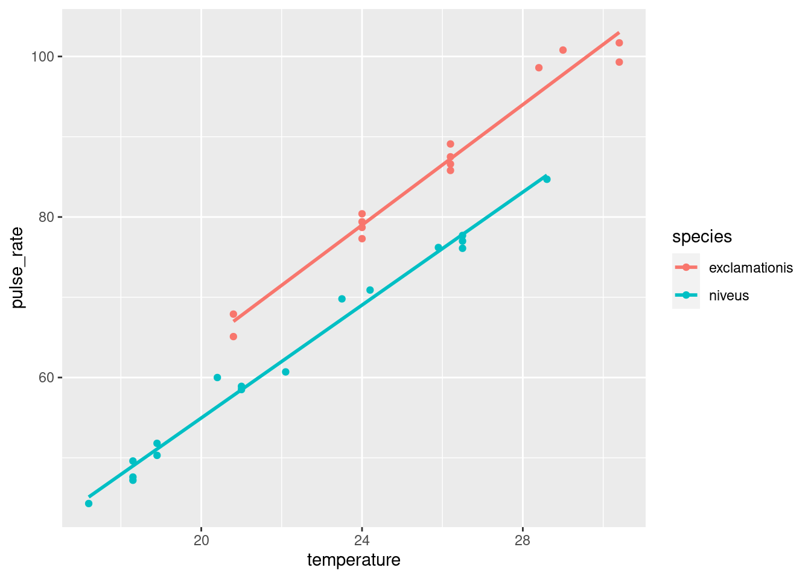
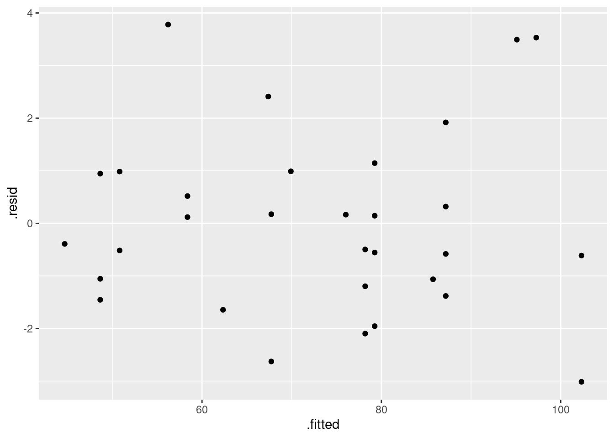
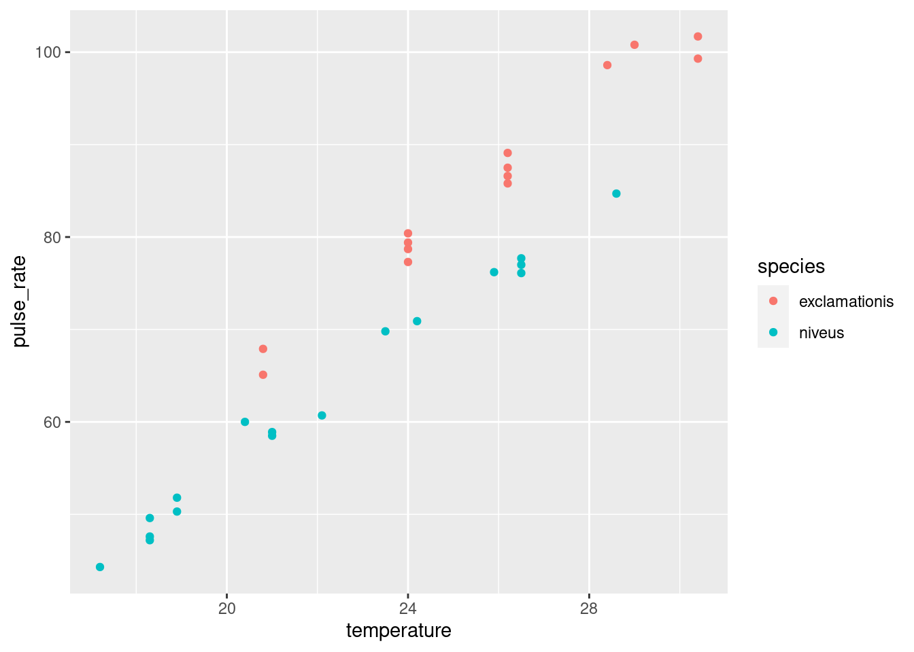
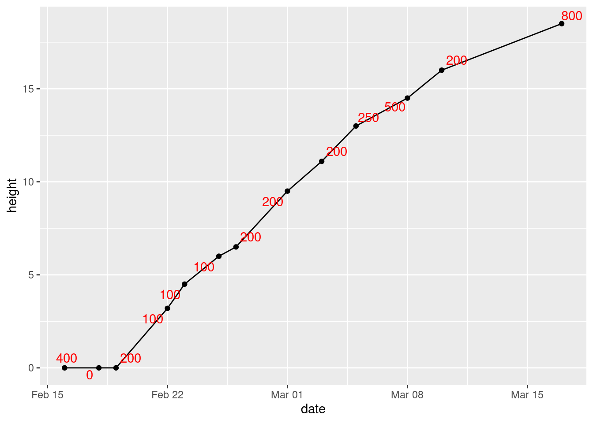
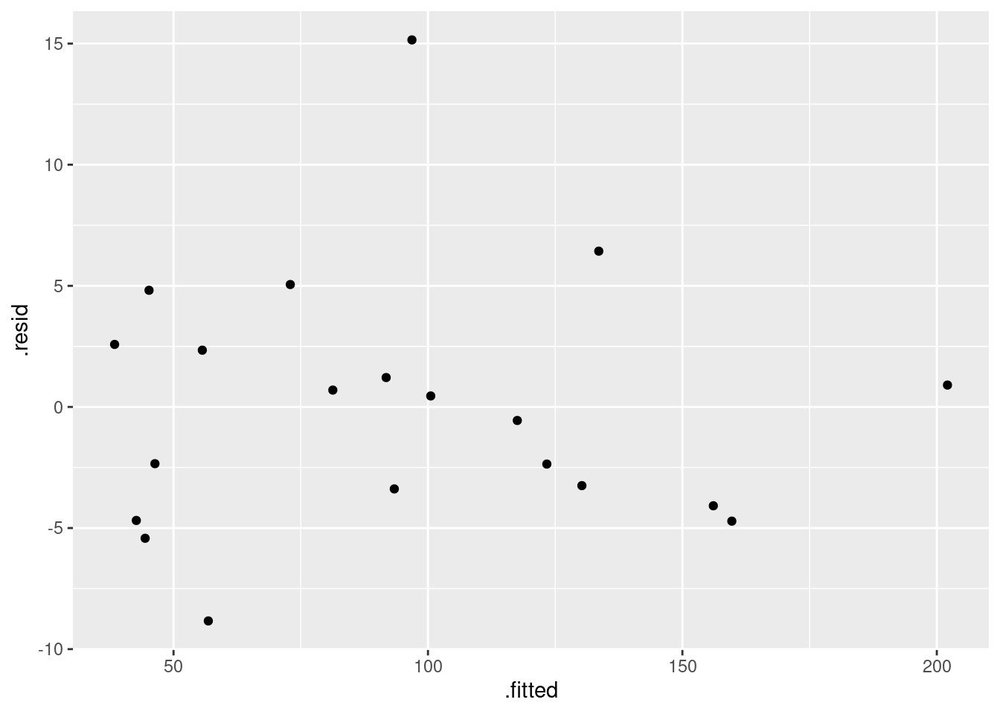
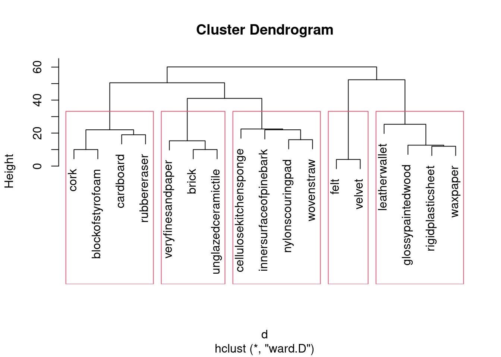

Chapter 21 Dates and times
The usual to begin with:
21.1 Growth of Mizuna lettuce seeds
In 2010, a group of students planted some Mizuna lettuce seeds, and recorded how they grew. The data were saved in an Excel spreadsheet, which is at link. The columns are: the date, the height (in cm) of (I presume) the tallest plant, the amount of water added since the previous date (ml), the temperature in the container where the seedlings were growing, and any additional notes that the students made (edited for length by me). The top line of the data file is variable names.
Read the spreadsheet data.
Make a plot of
heightagainst your dates, with the points joined by lines.Label each point on the plot with the amount of water added up to that point.
21.2 Types of childbirth
Childbirths can be of two types: a “vaginal” birth in which the child is born through the mother’s vagina in the normal fashion, and a “cesarean section” where a surgeon cuts through the wall of the mother’s abdomen, and the baby is delivered through the incision. Cesarean births are used when there are difficulties in pregnancy or during childbirth that would make a vaginal birth too risky. A hospital kept track of the number of vaginal and Cesarean births for the twelve months of 2012. Of interest is whether the Cesarean rate (the ratio of Cesarean births to all births) was increasing, decreasing or remaining stable over that time. The data may be found at link. The columns are the names of the months (in 2012), the number of cesarean births and the number of vaginal births. (The data are not real, but are typical of the kind of thing you would observe.)
Read the data into R and display your data frame.
Create a column of actual dates and also a column of cesarean rates, as defined above. Store your new data frame in a variable and display it. For the dates, assume that each date is of the 1st of the month that it belongs to.
Plot the cesarean rate against time, with a smooth trend. Do you see an upward trend, a downward trend, no trend, or something else?
Try to summarize the trend you just found with a correlation. What goes wrong? How can you fix it?
21.3 Wolves and caribou
In Denali National Park, Alaska, the size of the wolf population depends on the size of the caribou population (since wolves hunt and kill caribou). This is a large national park, so caribou are found in very large herds, so big, in fact, that the well-being of the entire herd is not threatened by wolf attacks.35 Can the size of the caribou population be used to predict the size of the wolf population? The data can be found at link. The columns are: the date of the survey,36 the name of the park employee in charge of the survey, the caribou population (in hundreds) and the wolf population (actual count).37
Take a look at the data file. How would you describe its format? Read it into R, and check that you got something sensible.
Create a new data frame where the column labelled
dateis now a genuine RDate, using something fromlubridate.Create new columns containing the days of the week and the month names for the dates.
Enough playing around with dates. Make a scatterplot of caribou population (explanatory) against wolf population (response). Do you see any relationship?
On your plot from the previous part, label each point with the year it belongs to. You can do this in two steps: first make a new column containing just the years, and then use it as labels for the points on the plot.
Make a plot of caribou population against time (this is done the obvious way). What seems to be happening to the caribou population over time?
The caribou and wolf populations over time are really “time series”. See if you can make a plot of both the caribou and wolf populations against time. You can make two \(y\)-axes, one for caribou and one for wolf; this will probably require some research on your part to figure out.
21.4 Dealing with dates in the Worcester Heart Attack study
The Worcester Heart Attack Study is an ongoing study of heart attacks in the Worcester, MA area. The main purpose of the study is to investigate changes over time in incidence and death rates, and also the use of different treatment approaches. We will be mainly using this data set to investigate data handling and dealing with dates. The data can be found at link.
Read the data into R. The reading-in part is straightforward, but check what type of thing each column is. Is that what it should be?
The date columns should be R dates. They are not year-month-day, so converting them via
as.Date(which is whatread_delimtries to do) will not work. Load thelubridatepackage, and create new columns in your data frame that are properly dates. Save your data frame, and list it to demonstrate that it worked.Create three new variables
diff1, diff2, diff3that are the numbers of days between each of your dates, and save the data frame in which they have been created. Verify that at least some of them are the same aslosandlenfol.Construct side-by-side boxplots of the length of followup by each followup status. You’ll need to make sure that the followup status, as it gets fed into
ggplot, is afactor, or, at least, not the number that it is now.
21.5 Going to sleep
A student keeps track of what time they go to bed and what time they get up in the morning. They also have an app on their phone that measures the number of hours they were asleep during that time. The data for one week are in http://ritsokiguess.site/datafiles/sleeping.csv, in the 24-hour clock.
Read in and display the data. What type of things are each of your columns?
Work out the fractional number of hours that the student was in bed each of these nights. (They may not have been asleep this whole time.) Your result needs to be a number since we will be doing some calculations with it shortly.
The student is concerned with something they call “sleep efficiency”. This is the percentage of time in bed spent sleeping. Work out the student’s sleep efficiency for the seven nights in this dataframe. Which night was the student’s sleep efficiency greatest?
Display the time spent in bed each night as a number of hours, minutes and seconds.
Make a graph of what time the student went to bed each night. Bear in mind that you only need the times, not the dates, and that you want a graph that is informative, showing appropriately the distribution of times the student went to bed.
My solutions follow:
21.6 Growth of Mizuna lettuce seeds
In 2010, a group of students planted some Mizuna lettuce seeds, and recorded how they grew. The data were saved in an Excel spreadsheet, which is at link. The columns are: the date, the height (in cm) of (I presume) the tallest plant, the amount of water added since the previous date (ml), the temperature in the container where the seedlings were growing, and any additional notes that the students made (edited for length by me). The top line of the data file is variable names.
- Read the spreadsheet data.
Solution
This is read_excel from package readxl. I’m
not sure what will happen to the dates yet. Note that this needs
a “local” copy of the spreadsheet (that is, you have to
download it and save it on your computer, then upload it to
rstudio.cloud), possibly using file.choose to
help R find it. I put my copy in the same project folder as I was
working in, so I just need the file name:
## # A tibble: 13 x 5
## date height water temperature notes
## <dttm> <dbl> <dbl> <dbl> <chr>
## 1 2010-02-16 00:00:00 0 400 21 planted seeds; water soaked up rapidly
## 2 2010-02-18 00:00:00 0 0 22.5 2 of 6 seeds not appeared; soil still moist
## 3 2010-02-19 00:00:00 0 200 20.9 4 of 6 plants broken surface
## 4 2010-02-22 00:00:00 3.2 100 20.8 Last seed hasn’t broken surface
## 5 2010-02-23 00:00:00 4.5 100 22.9 Plants growing well.
## 6 2010-02-25 00:00:00 6 100 21.8 Last seed sprouted; plants looking green and healthy
## 7 2010-02-26 00:00:00 6.5 200 21.2 <NA>
## 8 2010-03-01 00:00:00 9.5 200 21.8 <NA>
## 9 2010-03-03 00:00:00 11.1 200 21.7 Plants needing more water
## 10 2010-03-05 00:00:00 13 250 21.9 <NA>
## 11 2010-03-08 00:00:00 14.5 500 22.5 No water left, leaves droopy. Added water, came back to life
## 12 2010-03-10 00:00:00 16 200 21.2 Plants green and healthy
## 13 2010-03-17 00:00:00 18.5 800 20.8 Harvest. Tips of plants turning brown.The dates did get read properly. dttm is
“date-time”, so I guess it’s allowing for the possibility that my
dates had times attached as well. Unlike with SAS (as we see later),
the years came out right.
\(\blacksquare\)
- Make a plot of
heightagainst your dates, with the points joined by lines.
Solution

\(\blacksquare\)
- Label each point on the plot with the amount of water added up to that point.
Solution
This is water again. The way to do this is to load
ggrepel, then add geom_text_repel to the
plot, by adding label=water to the original
aes:
library(ggrepel)
ggplot(mizuna, aes(x = date, y = height, label = water)) +
geom_point() + geom_line() + geom_text_repel(colour = "red")
I made the text red, so that you can see it more easily. It “repels”
away from the points, but not from the lines joining them. Which makes
me wonder whether this would work better (I explain alpha afterwards):
library(ggrepel)
ggplot(mizuna, aes(x = date, y = height, label = water)) +
geom_point() + geom_line() + geom_label_repel(colour = "red", alpha = 0.7)
The difference between text and label is that
text just uses the text of the variable to mark the point,
while label puts that text in a box.
I think it works better. You can see where the line goes (under the boxes with the labels in them), but you can see the labels clearly.
What that alpha does is to make the thing it’s attached to
(the labels) partly transparent. If you leave it out (try it),
the black line disappears completely under the label boxes and you
can’t see where it goes at all. The value you give for alpha
says how transparent the thing is, from 1 (not transparent at all)
down to 0 (invisible). I first tried 0.3, and you could hardly see the
boxes; then I tried 0.7 so that the boxes were a bit more
prominent but the lines underneath were still slightly visible, and I
decided that this is what I liked. I think making the labels a
different colour was a good idea, since that helps to distinguish the
number on the label from the line underneath.
You can apply alpha to pretty much any ggplot thing
that might be on top of something else, to make it possible to see
what’s underneath it. The commonest use for it is if you have a
scatterplot with a lot of points; normally, you only see some of the
points, because the plot is then a sea of black. But if you make the
points partly transparent, you can see more of what’s nearby that
would otherwise have been hidden.
At some point, I also have to show
you folks jitter, which plots in slightly different places
points that would otherwise overprint each other exactly, and you
wouldn’t know how many of them there were, like the outliers on the
boxplots of German children near the new airport.
\(\blacksquare\)
21.7 Types of childbirth
Childbirths can be of two types: a “vaginal” birth in which the child is born through the mother’s vagina in the normal fashion, and a “cesarean section” where a surgeon cuts through the wall of the mother’s abdomen, and the baby is delivered through the incision. Cesarean births are used when there are difficulties in pregnancy or during childbirth that would make a vaginal birth too risky. A hospital kept track of the number of vaginal and Cesarean births for the twelve months of 2012. Of interest is whether the Cesarean rate (the ratio of Cesarean births to all births) was increasing, decreasing or remaining stable over that time. The data may be found at link. The columns are the names of the months (in 2012), the number of cesarean births and the number of vaginal births. (The data are not real, but are typical of the kind of thing you would observe.)
- Read the data into R and display your data frame.
Solution
This is a space-delimited text file, which means:
##
## ── Column specification ──────────────────────────────────────────────────────────────────────────────────────────────────────────────────────────────────────────────────────────────────────
## cols(
## month = col_character(),
## cesarean = col_double(),
## vaginal = col_double()
## )## # A tibble: 12 x 3
## month cesarean vaginal
## <chr> <dbl> <dbl>
## 1 Jan 11 68
## 2 Feb 9 63
## 3 Mar 10 72
## 4 Apr 18 105
## 5 May 10 90
## 6 Jun 10 92
## 7 Jul 11 78
## 8 Aug 9 83
## 9 Sep 9 90
## 10 Oct 15 101
## 11 Nov 12 130
## 12 Dec 8 101Some text and two numbers for each month. Check.
\(\blacksquare\)
- Create a column of actual dates and also a column of cesarean rates, as defined above. Store your new data frame in a variable and display it. For the dates, assume that each date is of the 1st of the month that it belongs to.
Solution
The easiest way is to use str_c or paste to
create a text date with year, month and day in some order, and
then to use the appropriate function from lubridate to
turn that into an actual date. If you use
str_c, you (probably) need the sep thing to
make sure the values get a space between them; paste
does this automatically. (The next question is whether
ymd or whatever can cope without spaces, but I’m not
exploring that.)
The cesarean rate is cesarean divided by
cesarean plus vaginal:
library(lubridate)
b2 <- births %>%
mutate(datestr = str_c("2012", month, "1", sep = " ")) %>%
mutate(thedate = ymd(datestr)) %>%
mutate(cesarean_rate = cesarean / (cesarean + vaginal))
b2## # A tibble: 12 x 6
## month cesarean vaginal datestr thedate cesarean_rate
## <chr> <dbl> <dbl> <chr> <date> <dbl>
## 1 Jan 11 68 2012 Jan 1 2012-01-01 0.139
## 2 Feb 9 63 2012 Feb 1 2012-02-01 0.125
## 3 Mar 10 72 2012 Mar 1 2012-03-01 0.122
## 4 Apr 18 105 2012 Apr 1 2012-04-01 0.146
## 5 May 10 90 2012 May 1 2012-05-01 0.1
## 6 Jun 10 92 2012 Jun 1 2012-06-01 0.0980
## 7 Jul 11 78 2012 Jul 1 2012-07-01 0.124
## 8 Aug 9 83 2012 Aug 1 2012-08-01 0.0978
## 9 Sep 9 90 2012 Sep 1 2012-09-01 0.0909
## 10 Oct 15 101 2012 Oct 1 2012-10-01 0.129
## 11 Nov 12 130 2012 Nov 1 2012-11-01 0.0845
## 12 Dec 8 101 2012 Dec 1 2012-12-01 0.0734If you don’t like that, create columns that contain 2012 and 1 all the way down. If you set a column name equal to a single value, that single value gets repeated the right number of times:38
## # A tibble: 12 x 5
## month cesarean vaginal year day
## <chr> <dbl> <dbl> <dbl> <dbl>
## 1 Jan 11 68 2012 1
## 2 Feb 9 63 2012 1
## 3 Mar 10 72 2012 1
## 4 Apr 18 105 2012 1
## 5 May 10 90 2012 1
## 6 Jun 10 92 2012 1
## 7 Jul 11 78 2012 1
## 8 Aug 9 83 2012 1
## 9 Sep 9 90 2012 1
## 10 Oct 15 101 2012 1
## 11 Nov 12 130 2012 1
## 12 Dec 8 101 2012 1and then use unite as in class. The distinction is that
unite only works on columns. It also “swallows up”
the columns that it is made out of; in this case, the original year,
month and day disappear:
b3 <- births %>%
mutate(year = 2012, day = 1) %>%
unite(datestr, year, month, day) %>%
mutate(thedate = ymd(datestr)) %>%
mutate(cesarean_rate = cesarean / (cesarean + vaginal))
b3## # A tibble: 12 x 5
## datestr cesarean vaginal thedate cesarean_rate
## <chr> <dbl> <dbl> <date> <dbl>
## 1 2012_Jan_1 11 68 2012-01-01 0.139
## 2 2012_Feb_1 9 63 2012-02-01 0.125
## 3 2012_Mar_1 10 72 2012-03-01 0.122
## 4 2012_Apr_1 18 105 2012-04-01 0.146
## 5 2012_May_1 10 90 2012-05-01 0.1
## 6 2012_Jun_1 10 92 2012-06-01 0.0980
## 7 2012_Jul_1 11 78 2012-07-01 0.124
## 8 2012_Aug_1 9 83 2012-08-01 0.0978
## 9 2012_Sep_1 9 90 2012-09-01 0.0909
## 10 2012_Oct_1 15 101 2012-10-01 0.129
## 11 2012_Nov_1 12 130 2012-11-01 0.0845
## 12 2012_Dec_1 8 101 2012-12-01 0.0734I don’t mind which order you glue your year, month and day together,
as long as you construct the dates with the consistent
lubridate function.
\(\blacksquare\)
- Plot the cesarean rate against time, with a smooth trend. Do you see an upward trend, a downward trend, no trend, or something else?
Solution
This is a scatterplot with time on the \(x\) axis:
## `geom_smooth()` using method = 'loess' and formula 'y ~ x'
I like this better than joining the points by lines, since we already have a trend on the plot, but you can do that in some contrasting way:
ggplot(b2, aes(x = thedate, y = cesarean_rate)) + geom_point() +
geom_line(linetype = "dashed") + geom_smooth()## `geom_smooth()` using method = 'loess' and formula 'y ~ x'
I see a downward trend. (“A downward trend with a wiggle” if you like.) There is a certain unevenness in the trend of the actual data, but the overall picture appears to be downhill.
\(\blacksquare\)
- Try to summarize the trend you just found with a correlation. What goes wrong? How can you fix it?
Solution
Something like this is the obvious guess:
## Error in cor(thedate, cesarean_rate): 'x' must be numericThis fails because thedate is not of itself a number. But
lurking in the background is how the date is actually
represented: as a number of days since Jan 1, 1970. Thus,
passing it through as.numeric might turn it into that:
## # A tibble: 12 x 7
## month cesarean vaginal datestr thedate cesarean_rate numeric_date
## <chr> <dbl> <dbl> <chr> <date> <dbl> <dbl>
## 1 Jan 11 68 2012 Jan 1 2012-01-01 0.139 15340
## 2 Feb 9 63 2012 Feb 1 2012-02-01 0.125 15371
## 3 Mar 10 72 2012 Mar 1 2012-03-01 0.122 15400
## 4 Apr 18 105 2012 Apr 1 2012-04-01 0.146 15431
## 5 May 10 90 2012 May 1 2012-05-01 0.1 15461
## 6 Jun 10 92 2012 Jun 1 2012-06-01 0.0980 15492
## 7 Jul 11 78 2012 Jul 1 2012-07-01 0.124 15522
## 8 Aug 9 83 2012 Aug 1 2012-08-01 0.0978 15553
## 9 Sep 9 90 2012 Sep 1 2012-09-01 0.0909 15584
## 10 Oct 15 101 2012 Oct 1 2012-10-01 0.129 15614
## 11 Nov 12 130 2012 Nov 1 2012-11-01 0.0845 15645
## 12 Dec 8 101 2012 Dec 1 2012-12-01 0.0734 15675A little mental calculation suggests that these dates in 2012 are a bit over 40 years, that is \(40 \times 365 \simeq 14000\) days, since the “zero” date of Jan 1, 1970, and so it turns out. This suggests that we can calculate a correlation with the numeric dates:
## [1] -0.7091219and we can make a test of the null hypothesis that the correlation is zero (against a two-sided alternative) thus:
##
## Pearson's product-moment correlation
##
## data: numeric_date and cesarean_rate
## t = -3.1804, df = 10, p-value = 0.009813
## alternative hypothesis: true correlation is not equal to 0
## 95 percent confidence interval:
## -0.9119078 -0.2280145
## sample estimates:
## cor
## -0.7091219That downward trend is more than just chance, with a P-value just under 0.01. Having said that, though, if you look at the confidence interval for the correlation, it includes almost all the negative values it could be, so that with only 12 observations we really know very little about the correlation other than that it appears to be negative.
Extra: In practice, you would typically have a much longer time series of measurements than this, such as monthly measurements for several years. In looking at only one year, like we did here, we could get trapped by seasonal effects: for example, cesarean rates might always go down through the year and then jump up again in January. Looking at several years would enable us to disentangle seasonal effects that happen every year from long-term trends. (As an example of this, think of Toronto snowfall: there is almost always snow in the winter and there is never snow in the summer, a seasonal effect, but in assessing climate change, you want to think about long-term trends in snowfall, after allowing for which month you’re looking at.)
\(\blacksquare\)
21.8 Wolves and caribou
In Denali National Park, Alaska, the size of the wolf population depends on the size of the caribou population (since wolves hunt and kill caribou). This is a large national park, so caribou are found in very large herds, so big, in fact, that the well-being of the entire herd is not threatened by wolf attacks.39 Can the size of the caribou population be used to predict the size of the wolf population? The data can be found at link. The columns are: the date of the survey,40 the name of the park employee in charge of the survey, the caribou population (in hundreds) and the wolf population (actual count).41
- Take a look at the data file. How would you describe its format? Read it into R, and check that you got something sensible.
Solution
This looks at first sight as if it’s separated by spaces, but
most of the data values are separated by more than one
space. If you look further, you’ll see that the values are
lined up in columns, with the variable names aligned at
the top. This is exactly the kind of thing that
read_table will read. We start with the usual
library(tidyverse):
library(tidyverse)
my_url <- "http://ritsokiguess.site/datafiles/caribou.txt"
denali <- read_table(my_url)##
## ── Column specification ──────────────────────────────────────────────────────────────────────────────────────────────────────────────────────────────────────────────────────────────────────
## cols(
## date = col_character(),
## name = col_character(),
## caribou = col_double(),
## wolf = col_double()
## )## # A tibble: 7 x 4
## date name caribou wolf
## <chr> <chr> <dbl> <dbl>
## 1 09/01/1995 David S. 30 66
## 2 09/24/1996 Youngjin K. 34 79
## 3 10/03/1997 Srinivasan M. 27 70
## 4 09/15/1998 Lee Anne J. 25 60
## 5 09/08/1999 Stephanie T. 17 48
## 6 09/03/2000 Angus Mc D. 23 55
## 7 10/06/2001 David S. 20 60That worked: four columns with the right names, and the counts of caribou and wolf are numbers. There are only seven years of surveys; in real-life data you would have more. But the point here is working with dates.
The only (small) weirdness is that the
dates are text rather than having been converted into dates. This is
because they are not year-month-day, which is the only format that
gets automatically converted into dates when read in. (You could use
mdy from lubridate to make them dates.)
Extra: you might have wondered how the names survived, even though they have spaces in them, sometimes more than one. Here’s how the file looks:
date name caribou wolf
09/01/1995 David S. 30 66
09/24/1996 Youngjin K. 34 79
10/03/1997 Srinivasan M. 27 70
09/15/1998 Lee Anne J. 25 60
09/08/1999 Stephanie T. 17 48
09/03/2000 Angus Mc D. 23 55
10/06/2001 David S. 20 60
What read_table looks for is columns that contain spaces
all the way down, and separates the values there. For example,
between the year ofdate and the first name in name
there is a space all the way down. After the names and before the
caribou counts there are several spaces, and there is one space
between the words caribou and wolf in the header
line that goes all the way down. Thus four columns, date,
name, caribou and wolf. This means that the
spaces within the names don’t cause any problems at all, since the
spaces aren’t in the same place in every line.42
\(\blacksquare\)
- Create a new data frame where the column labelled
dateis now a genuine RDate, using something fromlubridate.
Solution
What you do is to look at the format of the dates as they are
now. They appear to be month-day-year, American
style.43
Thus the function needed is mdy. It doesn’t matter
whether the months are names or numbers:
## # A tibble: 7 x 4
## date name caribou wolf
## <date> <chr> <dbl> <dbl>
## 1 1995-09-01 David S. 30 66
## 2 1996-09-24 Youngjin K. 34 79
## 3 1997-10-03 Srinivasan M. 27 70
## 4 1998-09-15 Lee Anne J. 25 60
## 5 1999-09-08 Stephanie T. 17 48
## 6 2000-09-03 Angus Mc D. 23 55
## 7 2001-10-06 David S. 20 60I lived on the edge and overwrote both my column and the whole data frame.44
The dates are displayed in ISO format, year-month-day. You see at the top of the column that they now really are dates, not just pieces of text that look like dates.
\(\blacksquare\)
- Create new columns containing the days of the week and the month names for the dates.
Solution
This involves digging in the lubridate help to find out how to extract things from a date. It turns out that wday extracts the day of the week from a date, by default as a number, and month gets the month, also by default as a number:
## # A tibble: 7 x 6
## date name caribou wolf mon wd
## <date> <chr> <dbl> <dbl> <dbl> <dbl>
## 1 1995-09-01 David S. 30 66 9 6
## 2 1996-09-24 Youngjin K. 34 79 9 3
## 3 1997-10-03 Srinivasan M. 27 70 10 6
## 4 1998-09-15 Lee Anne J. 25 60 9 3
## 5 1999-09-08 Stephanie T. 17 48 9 4
## 6 2000-09-03 Angus Mc D. 23 55 9 1
## 7 2001-10-06 David S. 20 60 10 7This is not what we wanted, though; we wanted the names of the months
and of the days. To fix that, add label=T to both functions:
## # A tibble: 7 x 6
## date name caribou wolf mon wd
## <date> <chr> <dbl> <dbl> <ord> <ord>
## 1 1995-09-01 David S. 30 66 Sep Fri
## 2 1996-09-24 Youngjin K. 34 79 Sep Tue
## 3 1997-10-03 Srinivasan M. 27 70 Oct Fri
## 4 1998-09-15 Lee Anne J. 25 60 Sep Tue
## 5 1999-09-08 Stephanie T. 17 48 Sep Wed
## 6 2000-09-03 Angus Mc D. 23 55 Sep Sun
## 7 2001-10-06 David S. 20 60 Oct Satand that cracks it.
No need to save this data frame anywhere, since we’re not using any of this later.
Extra: the ord means “ordered factor”, which makes sense
since these are categorical variables with a natural order. This means
that you could do something like counting the number of surveys in
each month like this:
## # A tibble: 2 x 2
## mon n
## <ord> <int>
## 1 Sep 5
## 2 Oct 2\(\blacksquare\)
- Enough playing around with dates. Make a scatterplot of caribou population (explanatory) against wolf population (response). Do you see any relationship?
Solution
Nothing terribly surprising here:

If you like, add a smooth trend to it:45
## `geom_smooth()` using method = 'loess' and formula 'y ~ x'
This is an upward trend: when one population is large, the other one is large too. This is typical for predator-prey relationships: when there is more to eat (more caribou) the wolf population goes up, and when less, it goes down.
\(\blacksquare\)
- On your plot from the previous part, label each point with the year it belongs to. You can do this in two steps: first make a new column containing just the years, and then use it as labels for the points on the plot.
Solution
I’m going to use geom_text_repel for the labels from package
ggrepel. The year values are gotten using the
lubridate function year:
denali %>%
mutate(year = year(date)) %>%
ggplot(aes(x = caribou, y = wolf, label = year)) + geom_point() + geom_text_repel()
I thought about joining up the points in year order. This is actually
not geom_line as you would have guessed, since what that
does is to join points in the order of the variable on the
\(x\)-axis.46
To join points in the order that they are in the data (what we want
here, because the points are in time order in the data), use instead
geom_path:
denali %>%
mutate(year = year(date)) %>%
ggplot(aes(x = caribou, y = wolf, label = year)) + geom_point() +
geom_text_repel() + geom_path()
In 1996, both populations were large, and both showed a steady decline until 1999. In 2000 and 2001, both populations seemed to be on the way up again, and you can imagine that in a couple of years, things would go back to about where they were in 1995.
\(\blacksquare\)
- Make a plot of caribou population against time (this is done the obvious way). What seems to be happening to the caribou population over time?
Solution
Make a scatterplot, with the survey date as explanatory variable, and caribou population as response (since time always goes on the \(x\)-axis):

I used an ordinary geom_line this time, to connect neighbouring
years, as is often done with a time series. The overall trend is
downward, though the 1999 value might be a low from which the
population is recovering.
\(\blacksquare\)
- The caribou and wolf populations over time are really “time series”. See if you can make a plot of both the caribou and wolf populations against time. You can make two \(y\)-axes, one for caribou and one for wolf; this will probably require some research on your part to figure out.
Solution
The obvious starting point is to note that both the
caribou and wolf columns are animal
populations, just of different animals. One way of plotting both
populations is to pivot_longer them up into one longer column, and
then plot them against time, with the two animals distinguished
by colour:
denali %>%
pivot_longer(caribou:wolf, names_to="animal", values_to="population") %>%
ggplot(aes(x = date, y = population, colour = animal)) +
geom_point() + geom_line()
This is not quite the story, though, because the caribou and wolf populations are on different scales. The caribou population is numbered in hundreds, while the wolf population is an actual count.
The surveys are late in the year, so the one that is nearly in 1996 is actually the 1995 survey.
What would be nice would be to have a secondary \(y\)-axis, so that there were two \(y\)-scales, one for each animal. This is very easy to manipulate, though (you can change either scale and get a very different-looking graph), so we ought to be careful.
All right, so let’s put the caribou on the left:

Or we can add a colour aesthetic to distinguish the caribou
from the wolf populations, that we’re going to add in a moment. This looks rather odd at first:

Now we think about adding the wolf numbers. This is done by adding a
second geom_line, overriding the y and the
colour to specify that this is wolf now:
ggplot(denali, aes(x = date, y = caribou, colour = "caribou")) +
geom_line() +
geom_line(aes(y = wolf, colour = "wolf"))
What has happened is that we get lines of different colour for each animal, with a legend. So far so good. The problem is that the wolf numbers are about 2.5 times bigger than the caribou numbers,47 so that we don’t get a good sense of how they go up and down together. If we divided the wolf numbers by 2.5, we would see this better:
ggplot(denali, aes(x = date, y = caribou, colour = "caribou")) +
geom_line() +
geom_line(aes(y = wolf / 2.5, colour = "wolf"))
Now we get to the secondary \(y\)-axis. We want to label this
wolf and have it reflect that we actually made the graph by
dividing the wolf values by 2.5:
ggplot(denali, aes(x = date, y = caribou, colour = "caribou")) +
geom_line() +
geom_line(aes(y = wolf / 2.5, colour = "wolf")) +
scale_y_continuous(sec.axis = sec_axis(~ . * 2.5, name = "wolf"))
Woo, and, very possibly, hoo. I got most of these ideas from link.
Now we see how the populations vary over time, and also that they vary together.
This is about the only double-\(y\)-axis setup that I like, with scales chosen so that both the series vary about the same amount. By “discreetly” changing the wolf scale, you could make it look as if one population was much bigger than the other, or varied much more than the other. Lies and statistics.
In my opinion, too many people just plot series against time, possibly with a second \(y\)-axis.48 Variables that vary together, like the wolf and caribou populations here, ought to be plotted on a scatterplot, possibly with the time points labelled.
The ambitious among you may like to compare the graphs here with other predator-prey relationships. If you are of a mathematical bent, you might look into the Lotka-Volterra equations, which is a system of two differential equations describing how changes in one population cause changes in the other population.
\(\blacksquare\)
21.9 Dealing with dates in the Worcester Heart Attack study
The Worcester Heart Attack Study is an ongoing study of heart attacks in the Worcester, MA area. The main purpose of the study is to investigate changes over time in incidence and death rates, and also the use of different treatment approaches. We will be mainly using this data set to investigate data handling and dealing with dates. The data can be found at link.
- Read the data into R. The reading-in part is straightforward, but check what type of thing each column is. Is that what it should be?
Solution
This is read_delim:
##
## ── Column specification ──────────────────────────────────────────────────────────────────────────────────────────────────────────────────────────────────────────────────────────────────────
## cols(
## .default = col_double(),
## admitdate = col_character(),
## disdate = col_character(),
## fdate = col_character()
## )
## ℹ Use `spec()` for the full column specifications.## # A tibble: 500 x 22
## id age gender hr sysbp diasbp bmi cvd afb sho chf av3 miord mitype year admitdate disdate fdate los dstat lenfol fstat
## <dbl> <dbl> <dbl> <dbl> <dbl> <dbl> <dbl> <dbl> <dbl> <dbl> <dbl> <dbl> <dbl> <dbl> <dbl> <chr> <chr> <chr> <dbl> <dbl> <dbl> <dbl>
## 1 1 83 0 89 152 78 25.5 1 1 0 0 0 1 0 1 13-01-1997 18-01-1997 31-12-2002 5 0 2178 0
## 2 2 49 0 84 120 60 24.0 1 0 0 0 0 0 1 1 19-01-1997 24-01-1997 31-12-2002 5 0 2172 0
## 3 3 70 1 83 147 88 22.1 0 0 0 0 0 0 1 1 01-01-1997 06-01-1997 31-12-2002 5 0 2190 0
## 4 4 70 0 65 123 76 26.6 1 0 0 1 0 0 1 1 17-02-1997 27-02-1997 11-12-1997 10 0 297 1
## 5 5 70 0 63 135 85 24.4 1 0 0 0 0 0 1 1 01-03-1997 07-03-1997 31-12-2002 6 0 2131 0
## 6 6 70 0 76 83 54 23.2 1 0 0 0 1 0 0 1 11-03-1997 12-03-1997 12-03-1997 1 1 1 1
## 7 7 57 0 73 191 116 39.5 1 0 0 0 0 0 1 1 10-03-1997 15-03-1997 31-12-2002 5 0 2122 0
## 8 8 55 0 91 147 95 27.1 1 0 0 0 0 0 1 1 11-01-1997 15-01-1997 15-02-2001 4 0 1496 1
## 9 9 88 1 63 209 100 27.4 1 0 0 1 0 0 0 1 31-12-1996 04-01-1997 09-07-1999 4 0 920 1
## 10 10 54 0 104 166 106 25.5 1 0 0 0 0 0 0 1 16-01-1997 21-01-1997 31-12-2002 5 0 2175 0
## # … with 490 more rowsTo see what type everything is, note that when you display a
tibble, the type of all the columns on the screen is
displayed at the top. Click the little right-arrow to see more columns
and to check their type.
All the numbers are properly integer (int) or decimal
(dbl) numbers, but the date columns are chr or
text. This means that they haven’t been read as Dates
(because they were not in year-month-day order). This is (as we will
see) unlike SAS, which determined that they were dates, and even used
the first 20 rows of the file to determine what format of dates they
were.
\(\blacksquare\)
- The date columns should be R dates. They are not
year-month-day, so converting them via
as.Date(which is whatread_delimtries to do) will not work. Load thelubridatepackage, and create new columns in your data frame that are properly dates. Save your data frame, and list it to demonstrate that it worked.
Solution
Load lubridate first:
These dates are day-month-year, so we need dmy from
lubridate:
whas %>% mutate(
admit = dmy(admitdate),
dis = dmy(disdate),
f = dmy(fdate)
) -> whas2
glimpse(whas2)## Rows: 500
## Columns: 25
## $ id <dbl> 1, 2, 3, 4, 5, 6, 7, 8, 9, 10, 11, 12, 13, 14, 15, 16, 17, 18, 19, 20, 21, 22, 23, 24, 25, 26, 27, 28, 29, 30, 31, 32, 33, 34, 35, 36, 37, 38, 39, 40, 41, 42, 43, 44, 45, 46, 47, 48, 49, 50, 51, 52, 53, 54, 55, 56, 57, 58, 59, 60, 61, 62, 63, 64, 65, 66, 67, 68, 69, 70, 71, 72, 73, 74, 75, 76, 77, 78, 79, 80, 81, 82, 83, 84, 85, 86, 87, 8…
## $ age <dbl> 83, 49, 70, 70, 70, 70, 57, 55, 88, 54, 48, 75, 48, 54, 67, 61, 70, 51, 56, 73, 49, 82, 85, 48, 69, 37, 88, 77, 86, 84, 83, 61, 58, 90, 84, 52, 92, 88, 74, 65, 63, 75, 82, 62, 87, 72, 75, 48, 83, 52, 80, 50, 80, 83, 87, 80, 65, 69, 84, 80, 74, 63, 80, 86, 69, 85, 76, 71, 69, 52, 76, 46, 35, 77, 84, 80, 53, 74, 71, 86, 73, 57, 88, 41, 73, …
## $ gender <dbl> 0, 0, 1, 0, 0, 0, 0, 0, 1, 0, 0, 0, 0, 1, 0, 0, 1, 1, 0, 0, 1, 0, 1, 0, 0, 0, 0, 1, 0, 1, 0, 1, 1, 1, 1, 0, 1, 1, 0, 0, 0, 1, 1, 0, 0, 0, 0, 0, 1, 0, 0, 0, 1, 0, 1, 1, 1, 0, 1, 0, 0, 1, 1, 1, 0, 1, 0, 0, 0, 0, 1, 0, 0, 1, 0, 0, 0, 1, 1, 1, 1, 1, 0, 0, 1, 1, 0, 0, 0, 1, 0, 0, 0, 0, 0, 0, 0, 0, 0, 1, 0, 1, 1, 0, 1, 0, 0, 1, 1, 0, 0, 1, 1, 0…
## $ hr <dbl> 89, 84, 83, 65, 63, 76, 73, 91, 63, 104, 95, 154, 85, 95, 93, 63, 95, 133, 105, 42, 119, 97, 104, 57, 74, 93, 100, 98, 58, 82, 135, 111, 86, 97, 69, 69, 70, 100, 128, 68, 115, 114, 62, 50, 110, 64, 106, 113, 70, 69, 105, 93, 42, 107, 118, 74, 81, 58, 135, 77, 78, 76, 92, 98, 97, 64, 73, 66, 86, 112, 112, 60, 83, 97, 92, 87, 90, 47, 53, 10…
## $ sysbp <dbl> 152, 120, 147, 123, 135, 83, 191, 147, 209, 166, 160, 193, 149, 150, 138, 142, 127, 166, 200, 142, 125, 209, 164, 117, 144, 168, 121, 168, 110, 169, 105, 130, 145, 127, 140, 184, 154, 133, 151, 174, 200, 180, 90, 80, 179, 210, 121, 170, 190, 156, 110, 115, 120, 136, 117, 149, 197, 146, 111, 127, 159, 118, 120, 123, 108, 127, 148, 133, 128…
## $ diasbp <dbl> 78, 60, 88, 76, 85, 54, 116, 95, 100, 106, 110, 123, 80, 65, 84, 92, 53, 134, 100, 79, 77, 122, 82, 74, 87, 95, 65, 56, 29, 82, 54, 80, 103, 82, 76, 110, 74, 64, 95, 90, 140, 110, 64, 50, 105, 98, 78, 100, 79, 90, 72, 69, 55, 59, 56, 51, 84, 58, 66, 76, 97, 70, 80, 74, 72, 66, 74, 76, 87, 80, 103, 46, 99, 48, 88, 62, 120, 90, 56, 54, 78, …
## $ bmi <dbl> 25.54051, 24.02398, 22.14290, 26.63187, 24.41255, 23.24236, 39.49046, 27.11609, 27.43554, 25.54448, 33.45110, 28.69720, 35.08359, 18.56161, 26.31269, 24.66175, 23.67519, 24.37450, 25.01782, 22.65552, 35.27571, 25.82748, 28.34291, 25.08833, 30.02138, 30.68397, 19.04582, 21.14409, 20.50654, 29.22863, 22.04732, 25.46070, 28.56874, 25.58435, …
## $ cvd <dbl> 1, 1, 0, 1, 1, 1, 1, 1, 1, 1, 0, 1, 1, 1, 0, 0, 1, 0, 0, 1, 1, 1, 1, 0, 1, 1, 0, 1, 0, 0, 1, 0, 1, 1, 1, 1, 0, 1, 1, 1, 1, 0, 1, 1, 1, 1, 1, 1, 1, 1, 1, 0, 1, 1, 1, 1, 1, 1, 1, 1, 0, 1, 1, 1, 1, 1, 1, 0, 1, 0, 1, 1, 0, 0, 0, 1, 1, 0, 0, 1, 1, 0, 1, 1, 1, 1, 1, 1, 1, 1, 1, 1, 0, 1, 0, 1, 0, 1, 0, 1, 1, 1, 1, 1, 0, 0, 1, 1, 1, 1, 0, 1, 1, 1…
## $ afb <dbl> 1, 0, 0, 0, 0, 0, 0, 0, 0, 0, 0, 1, 0, 1, 0, 0, 0, 0, 0, 0, 0, 0, 0, 0, 0, 0, 0, 0, 0, 1, 1, 0, 0, 0, 0, 0, 0, 0, 0, 0, 0, 0, 0, 0, 0, 0, 0, 0, 0, 0, 0, 0, 1, 0, 0, 0, 0, 0, 0, 0, 0, 0, 0, 0, 1, 1, 0, 0, 0, 0, 0, 0, 0, 0, 1, 1, 0, 0, 0, 0, 0, 1, 0, 0, 0, 0, 0, 1, 0, 0, 1, 0, 0, 0, 1, 1, 1, 1, 0, 0, 0, 0, 1, 0, 0, 0, 0, 0, 0, 0, 0, 0, 0, 0…
## $ sho <dbl> 0, 0, 0, 0, 0, 0, 0, 0, 0, 0, 0, 0, 0, 0, 0, 0, 0, 0, 0, 0, 0, 0, 0, 0, 0, 0, 0, 0, 0, 0, 0, 0, 0, 0, 0, 0, 0, 0, 0, 0, 0, 0, 0, 0, 0, 0, 0, 0, 0, 0, 0, 0, 0, 0, 1, 0, 0, 0, 0, 0, 1, 0, 0, 0, 0, 1, 0, 0, 0, 1, 0, 0, 0, 0, 0, 0, 0, 0, 0, 0, 0, 0, 0, 0, 0, 0, 0, 1, 0, 0, 0, 0, 0, 0, 0, 0, 0, 1, 0, 0, 0, 0, 0, 0, 0, 0, 0, 0, 0, 0, 0, 0, 0, 0…
## $ chf <dbl> 0, 0, 0, 1, 0, 0, 0, 0, 1, 0, 0, 1, 0, 1, 0, 0, 1, 1, 0, 1, 0, 1, 0, 0, 0, 0, 1, 0, 0, 0, 0, 1, 1, 0, 1, 0, 0, 1, 1, 0, 1, 0, 1, 0, 0, 0, 1, 0, 0, 0, 1, 0, 1, 1, 1, 1, 0, 0, 0, 0, 0, 1, 0, 1, 1, 1, 0, 0, 0, 0, 1, 0, 0, 0, 0, 1, 0, 0, 0, 0, 0, 0, 0, 0, 0, 0, 0, 1, 0, 0, 0, 0, 0, 0, 0, 0, 0, 1, 1, 0, 1, 1, 1, 0, 0, 0, 0, 0, 0, 0, 0, 0, 0, 0…
## $ av3 <dbl> 0, 0, 0, 0, 0, 1, 0, 0, 0, 0, 0, 0, 0, 0, 0, 0, 0, 0, 0, 1, 0, 0, 0, 0, 0, 0, 0, 0, 0, 0, 0, 0, 0, 0, 0, 0, 0, 0, 0, 0, 0, 0, 0, 0, 0, 0, 0, 1, 0, 0, 0, 0, 0, 0, 0, 0, 0, 0, 0, 0, 0, 0, 0, 0, 0, 0, 0, 0, 0, 0, 0, 0, 0, 0, 0, 0, 0, 0, 0, 0, 0, 0, 0, 0, 0, 0, 0, 0, 0, 0, 0, 0, 0, 1, 0, 0, 0, 1, 0, 0, 0, 0, 0, 0, 0, 0, 0, 0, 0, 0, 0, 0, 0, 0…
## $ miord <dbl> 1, 0, 0, 0, 0, 0, 0, 0, 0, 0, 0, 0, 0, 0, 1, 1, 1, 0, 0, 0, 0, 0, 1, 0, 0, 0, 0, 0, 1, 0, 1, 0, 0, 0, 1, 0, 0, 1, 1, 0, 0, 1, 0, 0, 0, 1, 0, 0, 0, 0, 1, 0, 1, 0, 0, 0, 0, 0, 1, 0, 0, 0, 0, 0, 1, 0, 1, 0, 0, 0, 1, 1, 0, 0, 0, 1, 1, 0, 0, 1, 0, 0, 0, 0, 1, 1, 1, 0, 1, 0, 0, 0, 0, 1, 0, 1, 0, 0, 0, 0, 0, 1, 0, 0, 0, 0, 1, 0, 0, 1, 0, 1, 1, 0…
## $ mitype <dbl> 0, 1, 1, 1, 1, 0, 1, 1, 0, 0, 1, 1, 0, 0, 0, 0, 0, 1, 1, 1, 0, 0, 0, 1, 0, 0, 0, 0, 0, 0, 0, 0, 1, 1, 0, 1, 0, 0, 0, 0, 1, 0, 0, 0, 0, 0, 1, 0, 0, 0, 0, 0, 0, 0, 1, 1, 0, 0, 0, 1, 0, 1, 1, 1, 1, 1, 0, 1, 1, 1, 0, 0, 1, 0, 1, 1, 0, 1, 0, 0, 1, 1, 0, 1, 0, 0, 0, 0, 0, 0, 0, 0, 0, 0, 1, 0, 0, 1, 0, 0, 0, 0, 0, 0, 1, 1, 0, 0, 0, 0, 1, 0, 1, 1…
## $ year <dbl> 1, 1, 1, 1, 1, 1, 1, 1, 1, 1, 1, 1, 1, 1, 1, 1, 1, 1, 1, 1, 1, 1, 1, 1, 1, 1, 1, 1, 1, 1, 1, 1, 1, 1, 1, 1, 1, 1, 1, 1, 1, 1, 1, 1, 1, 1, 1, 1, 1, 1, 1, 1, 1, 1, 1, 1, 1, 1, 1, 1, 1, 1, 1, 1, 1, 1, 1, 1, 1, 1, 1, 1, 1, 1, 1, 1, 1, 1, 1, 1, 1, 1, 1, 1, 1, 1, 1, 1, 1, 1, 1, 1, 1, 1, 1, 1, 1, 1, 1, 1, 1, 1, 1, 1, 1, 1, 1, 1, 1, 1, 1, 1, 1, 1…
## $ admitdate <chr> "13-01-1997", "19-01-1997", "01-01-1997", "17-02-1997", "01-03-1997", "11-03-1997", "10-03-1997", "11-01-1997", "31-12-1996", "16-01-1997", "18-01-1997", "17-01-1997", "30-12-1996", "19-12-1996", "25-01-1997", "23-01-1997", "20-12-1996", "31-12-1996", "14-02-1997", "05-01-1997", "29-01-1997", "18-03-1997", "28-02-1997", "21-02-1997", "23-…
## $ disdate <chr> "18-01-1997", "24-01-1997", "06-01-1997", "27-02-1997", "07-03-1997", "12-03-1997", "15-03-1997", "15-01-1997", "04-01-1997", "21-01-1997", "23-01-1997", "27-01-1997", "06-01-1997", "09-01-1997", "29-01-1997", "24-01-1997", "02-01-1997", "14-01-1997", "20-02-1997", "22-01-1997", "03-02-1997", "28-03-1997", "08-03-1997", "26-02-1997", "29-…
## $ fdate <chr> "31-12-2002", "31-12-2002", "31-12-2002", "11-12-1997", "31-12-2002", "12-03-1997", "31-12-2002", "15-02-2001", "09-07-1999", "31-12-2002", "31-12-2002", "15-08-2001", "31-12-2002", "03-05-1999", "31-12-2002", "31-12-2002", "13-06-1999", "11-06-2003", "31-12-2002", "07-03-1997", "15-07-2003", "31-12-2002", "31-12-2002", "31-12-2002", "31-…
## $ los <dbl> 5, 5, 5, 10, 6, 1, 5, 4, 4, 5, 5, 10, 7, 21, 4, 1, 13, 14, 6, 17, 5, 10, 8, 5, 6, 2, 4, 3, 5, 5, 11, 5, 6, 2, 7, 5, 6, 6, 4, 3, 47, 7, 10, 5, 6, 4, 13, 13, 3, 4, 6, 5, 14, 6, 3, 12, 9, 5, 2, 6, 2, 4, 6, 11, 4, 9, 3, 4, 5, 1, 7, 6, 6, 4, 6, 17, 4, 3, 2, 5, 3, 14, 1, 1, 3, 4, 5, 4, 4, 7, 2, 3, 6, 8, 7, 16, 24, 2, 7, 10, 2, 5, 9, 3, 5, 5, 4,…
## $ dstat <dbl> 0, 0, 0, 0, 0, 1, 0, 0, 0, 0, 0, 0, 0, 0, 0, 0, 0, 0, 0, 0, 0, 0, 0, 0, 0, 0, 0, 0, 0, 0, 0, 0, 0, 1, 1, 0, 0, 0, 0, 0, 0, 0, 0, 0, 0, 0, 0, 0, 0, 0, 0, 0, 0, 0, 1, 0, 0, 0, 0, 0, 1, 0, 0, 0, 0, 0, 0, 0, 0, 1, 0, 0, 0, 0, 0, 0, 0, 0, 0, 0, 0, 0, 0, 0, 0, 0, 0, 1, 0, 0, 0, 0, 0, 0, 0, 0, 0, 1, 1, 0, 0, 0, 0, 0, 0, 0, 0, 0, 0, 0, 0, 0, 1, 0…
## $ lenfol <dbl> 2178, 2172, 2190, 297, 2131, 1, 2122, 1496, 920, 2175, 2173, 1671, 2192, 865, 2166, 2168, 905, 2353, 2146, 61, 2358, 2114, 2132, 2139, 2048, 2152, 6, 2156, 118, 2064, 849, 714, 2057, 2, 7, 2151, 6, 422, 354, 2065, 2048, 1065, 535, 2118, 97, 2113, 100, 2032, 1317, 2126, 2126, 2123, 670, 343, 3, 2009, 64, 1994, 1579, 1993, 2, 1955, 42, 1964…
## $ fstat <dbl> 0, 0, 0, 1, 0, 1, 0, 1, 1, 0, 0, 1, 0, 1, 0, 0, 1, 1, 0, 1, 1, 0, 0, 0, 0, 0, 1, 0, 1, 0, 1, 1, 0, 1, 1, 0, 1, 1, 1, 0, 0, 1, 1, 0, 1, 0, 1, 0, 1, 0, 0, 0, 1, 1, 1, 0, 1, 0, 1, 0, 1, 0, 1, 0, 1, 1, 0, 0, 0, 1, 1, 0, 0, 0, 0, 0, 0, 1, 0, 1, 0, 1, 1, 0, 0, 0, 0, 1, 1, 1, 1, 1, 1, 1, 1, 1, 0, 1, 1, 0, 1, 1, 0, 1, 1, 1, 0, 0, 0, 0, 0, 0, 1, 0…
## $ admit <date> 1997-01-13, 1997-01-19, 1997-01-01, 1997-02-17, 1997-03-01, 1997-03-11, 1997-03-10, 1997-01-11, 1996-12-31, 1997-01-16, 1997-01-18, 1997-01-17, 1996-12-30, 1996-12-19, 1997-01-25, 1997-01-23, 1996-12-20, 1996-12-31, 1997-02-14, 1997-01-05, 1997-01-29, 1997-03-18, 1997-02-28, 1997-02-21, 1997-05-23, 1997-02-08, 1997-02-03, 1997-02-04, 199…
## $ dis <date> 1997-01-18, 1997-01-24, 1997-01-06, 1997-02-27, 1997-03-07, 1997-03-12, 1997-03-15, 1997-01-15, 1997-01-04, 1997-01-21, 1997-01-23, 1997-01-27, 1997-01-06, 1997-01-09, 1997-01-29, 1997-01-24, 1997-01-02, 1997-01-14, 1997-02-20, 1997-01-22, 1997-02-03, 1997-03-28, 1997-03-08, 1997-02-26, 1997-05-29, 1997-02-10, 1997-02-07, 1997-02-07, 199…
## $ f <date> 2002-12-31, 2002-12-31, 2002-12-31, 1997-12-11, 2002-12-31, 1997-03-12, 2002-12-31, 2001-02-15, 1999-07-09, 2002-12-31, 2002-12-31, 2001-08-15, 2002-12-31, 1999-05-03, 2002-12-31, 2002-12-31, 1999-06-13, 2003-06-11, 2002-12-31, 1997-03-07, 2003-07-15, 2002-12-31, 2002-12-31, 2002-12-31, 2002-12-31, 2002-12-31, 1997-02-09, 2002-12-31, 199…There are a lot of columns, so I used glimpse. The three new
variables we created are at the end of the list. They are correctly
Dates, and they have the right values, the ones we can see at
least.
The indentation is up to you. I think it’s nice to make the
creations of the three new variables line up. You can also make the
opening and closing brackets on the long mutate aligned, or
you can do as I have done here and put two closing brackets on the
end. The rationale for this is that each of the variable definition
lines in the mutate ends either with a comma or an extra
closing bracket, the latter being on the last line. Your choice here is
a matter of taste or (in your working life) the coding norms of the
team you’re working with.
Extra: you may have been offended by the repetition above. It so happens that
these columns’ names all end in date and they are the only
ones that do, so we can use a “select helper” to select only them,
and then submit all of them to a mutate via across,
which goes like this:
## Rows: 500
## Columns: 22
## $ id <dbl> 1, 2, 3, 4, 5, 6, 7, 8, 9, 10, 11, 12, 13, 14, 15, 16, 17, 18, 19, 20, 21, 22, 23, 24, 25, 26, 27, 28, 29, 30, 31, 32, 33, 34, 35, 36, 37, 38, 39, 40, 41, 42, 43, 44, 45, 46, 47, 48, 49, 50, 51, 52, 53, 54, 55, 56, 57, 58, 59, 60, 61, 62, 63, 64, 65, 66, 67, 68, 69, 70, 71, 72, 73, 74, 75, 76, 77, 78, 79, 80, 81, 82, 83, 84, 85, 86, 87, 8…
## $ age <dbl> 83, 49, 70, 70, 70, 70, 57, 55, 88, 54, 48, 75, 48, 54, 67, 61, 70, 51, 56, 73, 49, 82, 85, 48, 69, 37, 88, 77, 86, 84, 83, 61, 58, 90, 84, 52, 92, 88, 74, 65, 63, 75, 82, 62, 87, 72, 75, 48, 83, 52, 80, 50, 80, 83, 87, 80, 65, 69, 84, 80, 74, 63, 80, 86, 69, 85, 76, 71, 69, 52, 76, 46, 35, 77, 84, 80, 53, 74, 71, 86, 73, 57, 88, 41, 73, …
## $ gender <dbl> 0, 0, 1, 0, 0, 0, 0, 0, 1, 0, 0, 0, 0, 1, 0, 0, 1, 1, 0, 0, 1, 0, 1, 0, 0, 0, 0, 1, 0, 1, 0, 1, 1, 1, 1, 0, 1, 1, 0, 0, 0, 1, 1, 0, 0, 0, 0, 0, 1, 0, 0, 0, 1, 0, 1, 1, 1, 0, 1, 0, 0, 1, 1, 1, 0, 1, 0, 0, 0, 0, 1, 0, 0, 1, 0, 0, 0, 1, 1, 1, 1, 1, 0, 0, 1, 1, 0, 0, 0, 1, 0, 0, 0, 0, 0, 0, 0, 0, 0, 1, 0, 1, 1, 0, 1, 0, 0, 1, 1, 0, 0, 1, 1, 0…
## $ hr <dbl> 89, 84, 83, 65, 63, 76, 73, 91, 63, 104, 95, 154, 85, 95, 93, 63, 95, 133, 105, 42, 119, 97, 104, 57, 74, 93, 100, 98, 58, 82, 135, 111, 86, 97, 69, 69, 70, 100, 128, 68, 115, 114, 62, 50, 110, 64, 106, 113, 70, 69, 105, 93, 42, 107, 118, 74, 81, 58, 135, 77, 78, 76, 92, 98, 97, 64, 73, 66, 86, 112, 112, 60, 83, 97, 92, 87, 90, 47, 53, 10…
## $ sysbp <dbl> 152, 120, 147, 123, 135, 83, 191, 147, 209, 166, 160, 193, 149, 150, 138, 142, 127, 166, 200, 142, 125, 209, 164, 117, 144, 168, 121, 168, 110, 169, 105, 130, 145, 127, 140, 184, 154, 133, 151, 174, 200, 180, 90, 80, 179, 210, 121, 170, 190, 156, 110, 115, 120, 136, 117, 149, 197, 146, 111, 127, 159, 118, 120, 123, 108, 127, 148, 133, 128…
## $ diasbp <dbl> 78, 60, 88, 76, 85, 54, 116, 95, 100, 106, 110, 123, 80, 65, 84, 92, 53, 134, 100, 79, 77, 122, 82, 74, 87, 95, 65, 56, 29, 82, 54, 80, 103, 82, 76, 110, 74, 64, 95, 90, 140, 110, 64, 50, 105, 98, 78, 100, 79, 90, 72, 69, 55, 59, 56, 51, 84, 58, 66, 76, 97, 70, 80, 74, 72, 66, 74, 76, 87, 80, 103, 46, 99, 48, 88, 62, 120, 90, 56, 54, 78, …
## $ bmi <dbl> 25.54051, 24.02398, 22.14290, 26.63187, 24.41255, 23.24236, 39.49046, 27.11609, 27.43554, 25.54448, 33.45110, 28.69720, 35.08359, 18.56161, 26.31269, 24.66175, 23.67519, 24.37450, 25.01782, 22.65552, 35.27571, 25.82748, 28.34291, 25.08833, 30.02138, 30.68397, 19.04582, 21.14409, 20.50654, 29.22863, 22.04732, 25.46070, 28.56874, 25.58435, …
## $ cvd <dbl> 1, 1, 0, 1, 1, 1, 1, 1, 1, 1, 0, 1, 1, 1, 0, 0, 1, 0, 0, 1, 1, 1, 1, 0, 1, 1, 0, 1, 0, 0, 1, 0, 1, 1, 1, 1, 0, 1, 1, 1, 1, 0, 1, 1, 1, 1, 1, 1, 1, 1, 1, 0, 1, 1, 1, 1, 1, 1, 1, 1, 0, 1, 1, 1, 1, 1, 1, 0, 1, 0, 1, 1, 0, 0, 0, 1, 1, 0, 0, 1, 1, 0, 1, 1, 1, 1, 1, 1, 1, 1, 1, 1, 0, 1, 0, 1, 0, 1, 0, 1, 1, 1, 1, 1, 0, 0, 1, 1, 1, 1, 0, 1, 1, 1…
## $ afb <dbl> 1, 0, 0, 0, 0, 0, 0, 0, 0, 0, 0, 1, 0, 1, 0, 0, 0, 0, 0, 0, 0, 0, 0, 0, 0, 0, 0, 0, 0, 1, 1, 0, 0, 0, 0, 0, 0, 0, 0, 0, 0, 0, 0, 0, 0, 0, 0, 0, 0, 0, 0, 0, 1, 0, 0, 0, 0, 0, 0, 0, 0, 0, 0, 0, 1, 1, 0, 0, 0, 0, 0, 0, 0, 0, 1, 1, 0, 0, 0, 0, 0, 1, 0, 0, 0, 0, 0, 1, 0, 0, 1, 0, 0, 0, 1, 1, 1, 1, 0, 0, 0, 0, 1, 0, 0, 0, 0, 0, 0, 0, 0, 0, 0, 0…
## $ sho <dbl> 0, 0, 0, 0, 0, 0, 0, 0, 0, 0, 0, 0, 0, 0, 0, 0, 0, 0, 0, 0, 0, 0, 0, 0, 0, 0, 0, 0, 0, 0, 0, 0, 0, 0, 0, 0, 0, 0, 0, 0, 0, 0, 0, 0, 0, 0, 0, 0, 0, 0, 0, 0, 0, 0, 1, 0, 0, 0, 0, 0, 1, 0, 0, 0, 0, 1, 0, 0, 0, 1, 0, 0, 0, 0, 0, 0, 0, 0, 0, 0, 0, 0, 0, 0, 0, 0, 0, 1, 0, 0, 0, 0, 0, 0, 0, 0, 0, 1, 0, 0, 0, 0, 0, 0, 0, 0, 0, 0, 0, 0, 0, 0, 0, 0…
## $ chf <dbl> 0, 0, 0, 1, 0, 0, 0, 0, 1, 0, 0, 1, 0, 1, 0, 0, 1, 1, 0, 1, 0, 1, 0, 0, 0, 0, 1, 0, 0, 0, 0, 1, 1, 0, 1, 0, 0, 1, 1, 0, 1, 0, 1, 0, 0, 0, 1, 0, 0, 0, 1, 0, 1, 1, 1, 1, 0, 0, 0, 0, 0, 1, 0, 1, 1, 1, 0, 0, 0, 0, 1, 0, 0, 0, 0, 1, 0, 0, 0, 0, 0, 0, 0, 0, 0, 0, 0, 1, 0, 0, 0, 0, 0, 0, 0, 0, 0, 1, 1, 0, 1, 1, 1, 0, 0, 0, 0, 0, 0, 0, 0, 0, 0, 0…
## $ av3 <dbl> 0, 0, 0, 0, 0, 1, 0, 0, 0, 0, 0, 0, 0, 0, 0, 0, 0, 0, 0, 1, 0, 0, 0, 0, 0, 0, 0, 0, 0, 0, 0, 0, 0, 0, 0, 0, 0, 0, 0, 0, 0, 0, 0, 0, 0, 0, 0, 1, 0, 0, 0, 0, 0, 0, 0, 0, 0, 0, 0, 0, 0, 0, 0, 0, 0, 0, 0, 0, 0, 0, 0, 0, 0, 0, 0, 0, 0, 0, 0, 0, 0, 0, 0, 0, 0, 0, 0, 0, 0, 0, 0, 0, 0, 1, 0, 0, 0, 1, 0, 0, 0, 0, 0, 0, 0, 0, 0, 0, 0, 0, 0, 0, 0, 0…
## $ miord <dbl> 1, 0, 0, 0, 0, 0, 0, 0, 0, 0, 0, 0, 0, 0, 1, 1, 1, 0, 0, 0, 0, 0, 1, 0, 0, 0, 0, 0, 1, 0, 1, 0, 0, 0, 1, 0, 0, 1, 1, 0, 0, 1, 0, 0, 0, 1, 0, 0, 0, 0, 1, 0, 1, 0, 0, 0, 0, 0, 1, 0, 0, 0, 0, 0, 1, 0, 1, 0, 0, 0, 1, 1, 0, 0, 0, 1, 1, 0, 0, 1, 0, 0, 0, 0, 1, 1, 1, 0, 1, 0, 0, 0, 0, 1, 0, 1, 0, 0, 0, 0, 0, 1, 0, 0, 0, 0, 1, 0, 0, 1, 0, 1, 1, 0…
## $ mitype <dbl> 0, 1, 1, 1, 1, 0, 1, 1, 0, 0, 1, 1, 0, 0, 0, 0, 0, 1, 1, 1, 0, 0, 0, 1, 0, 0, 0, 0, 0, 0, 0, 0, 1, 1, 0, 1, 0, 0, 0, 0, 1, 0, 0, 0, 0, 0, 1, 0, 0, 0, 0, 0, 0, 0, 1, 1, 0, 0, 0, 1, 0, 1, 1, 1, 1, 1, 0, 1, 1, 1, 0, 0, 1, 0, 1, 1, 0, 1, 0, 0, 1, 1, 0, 1, 0, 0, 0, 0, 0, 0, 0, 0, 0, 0, 1, 0, 0, 1, 0, 0, 0, 0, 0, 0, 1, 1, 0, 0, 0, 0, 1, 0, 1, 1…
## $ year <dbl> 1, 1, 1, 1, 1, 1, 1, 1, 1, 1, 1, 1, 1, 1, 1, 1, 1, 1, 1, 1, 1, 1, 1, 1, 1, 1, 1, 1, 1, 1, 1, 1, 1, 1, 1, 1, 1, 1, 1, 1, 1, 1, 1, 1, 1, 1, 1, 1, 1, 1, 1, 1, 1, 1, 1, 1, 1, 1, 1, 1, 1, 1, 1, 1, 1, 1, 1, 1, 1, 1, 1, 1, 1, 1, 1, 1, 1, 1, 1, 1, 1, 1, 1, 1, 1, 1, 1, 1, 1, 1, 1, 1, 1, 1, 1, 1, 1, 1, 1, 1, 1, 1, 1, 1, 1, 1, 1, 1, 1, 1, 1, 1, 1, 1…
## $ admitdate <date> 1997-01-13, 1997-01-19, 1997-01-01, 1997-02-17, 1997-03-01, 1997-03-11, 1997-03-10, 1997-01-11, 1996-12-31, 1997-01-16, 1997-01-18, 1997-01-17, 1996-12-30, 1996-12-19, 1997-01-25, 1997-01-23, 1996-12-20, 1996-12-31, 1997-02-14, 1997-01-05, 1997-01-29, 1997-03-18, 1997-02-28, 1997-02-21, 1997-05-23, 1997-02-08, 1997-02-03, 1997-02-04, 199…
## $ disdate <date> 1997-01-18, 1997-01-24, 1997-01-06, 1997-02-27, 1997-03-07, 1997-03-12, 1997-03-15, 1997-01-15, 1997-01-04, 1997-01-21, 1997-01-23, 1997-01-27, 1997-01-06, 1997-01-09, 1997-01-29, 1997-01-24, 1997-01-02, 1997-01-14, 1997-02-20, 1997-01-22, 1997-02-03, 1997-03-28, 1997-03-08, 1997-02-26, 1997-05-29, 1997-02-10, 1997-02-07, 1997-02-07, 199…
## $ fdate <date> 2002-12-31, 2002-12-31, 2002-12-31, 1997-12-11, 2002-12-31, 1997-03-12, 2002-12-31, 2001-02-15, 1999-07-09, 2002-12-31, 2002-12-31, 2001-08-15, 2002-12-31, 1999-05-03, 2002-12-31, 2002-12-31, 1999-06-13, 2003-06-11, 2002-12-31, 1997-03-07, 2003-07-15, 2002-12-31, 2002-12-31, 2002-12-31, 2002-12-31, 2002-12-31, 1997-02-09, 2002-12-31, 199…
## $ los <dbl> 5, 5, 5, 10, 6, 1, 5, 4, 4, 5, 5, 10, 7, 21, 4, 1, 13, 14, 6, 17, 5, 10, 8, 5, 6, 2, 4, 3, 5, 5, 11, 5, 6, 2, 7, 5, 6, 6, 4, 3, 47, 7, 10, 5, 6, 4, 13, 13, 3, 4, 6, 5, 14, 6, 3, 12, 9, 5, 2, 6, 2, 4, 6, 11, 4, 9, 3, 4, 5, 1, 7, 6, 6, 4, 6, 17, 4, 3, 2, 5, 3, 14, 1, 1, 3, 4, 5, 4, 4, 7, 2, 3, 6, 8, 7, 16, 24, 2, 7, 10, 2, 5, 9, 3, 5, 5, 4,…
## $ dstat <dbl> 0, 0, 0, 0, 0, 1, 0, 0, 0, 0, 0, 0, 0, 0, 0, 0, 0, 0, 0, 0, 0, 0, 0, 0, 0, 0, 0, 0, 0, 0, 0, 0, 0, 1, 1, 0, 0, 0, 0, 0, 0, 0, 0, 0, 0, 0, 0, 0, 0, 0, 0, 0, 0, 0, 1, 0, 0, 0, 0, 0, 1, 0, 0, 0, 0, 0, 0, 0, 0, 1, 0, 0, 0, 0, 0, 0, 0, 0, 0, 0, 0, 0, 0, 0, 0, 0, 0, 1, 0, 0, 0, 0, 0, 0, 0, 0, 0, 1, 1, 0, 0, 0, 0, 0, 0, 0, 0, 0, 0, 0, 0, 0, 1, 0…
## $ lenfol <dbl> 2178, 2172, 2190, 297, 2131, 1, 2122, 1496, 920, 2175, 2173, 1671, 2192, 865, 2166, 2168, 905, 2353, 2146, 61, 2358, 2114, 2132, 2139, 2048, 2152, 6, 2156, 118, 2064, 849, 714, 2057, 2, 7, 2151, 6, 422, 354, 2065, 2048, 1065, 535, 2118, 97, 2113, 100, 2032, 1317, 2126, 2126, 2123, 670, 343, 3, 2009, 64, 1994, 1579, 1993, 2, 1955, 42, 1964…
## $ fstat <dbl> 0, 0, 0, 1, 0, 1, 0, 1, 1, 0, 0, 1, 0, 1, 0, 0, 1, 1, 0, 1, 1, 0, 0, 0, 0, 0, 1, 0, 1, 0, 1, 1, 0, 1, 1, 0, 1, 1, 1, 0, 0, 1, 1, 0, 1, 0, 1, 0, 1, 0, 0, 0, 1, 1, 1, 0, 1, 0, 1, 0, 1, 0, 1, 0, 1, 1, 0, 0, 0, 1, 1, 0, 0, 0, 0, 0, 0, 1, 0, 1, 0, 1, 1, 0, 0, 0, 0, 1, 1, 1, 1, 1, 1, 1, 1, 1, 0, 1, 1, 0, 1, 1, 0, 1, 1, 1, 0, 0, 0, 0, 0, 0, 1, 0…One line, as you see, not three. The English-language version of this reads “for each of the columns whose
name ends with date, work out dmy of it”, that is to say, convert it into a date.
We can use any of the
select-helpers in this, including listing the column numbers or
names; in this case our date variables all ended with
date.
This overwrites the original date columns (you can see that they are now dates), but you can give them new names thus. This is inside the across inside the mutate, so it needs two close-brackets after (the probable reason for the error if you get one):
## Rows: 500
## Columns: 25
## $ id <dbl> 1, 2, 3, 4, 5, 6, 7, 8, 9, 10, 11, 12, 13, 14, 15, 16, 17, 18, 19, 20, 21, 22, 23, 24, 25, 26, 27, 28, 29, 30, 31, 32, 33, 34, 35, 36, 37, 38, 39, 40, 41, 42, 43, 44, 45, 46, 47, 48, 49, 50, 51, 52, 53, 54, 55, 56, 57, 58, 59, 60, 61, 62, 63, 64, 65, 66, 67, 68, 69, 70, 71, 72, 73, 74, 75, 76, 77, 78, 79, 80, 81, 82, 83, 84, 85, 86, 87,…
## $ age <dbl> 83, 49, 70, 70, 70, 70, 57, 55, 88, 54, 48, 75, 48, 54, 67, 61, 70, 51, 56, 73, 49, 82, 85, 48, 69, 37, 88, 77, 86, 84, 83, 61, 58, 90, 84, 52, 92, 88, 74, 65, 63, 75, 82, 62, 87, 72, 75, 48, 83, 52, 80, 50, 80, 83, 87, 80, 65, 69, 84, 80, 74, 63, 80, 86, 69, 85, 76, 71, 69, 52, 76, 46, 35, 77, 84, 80, 53, 74, 71, 86, 73, 57, 88, 41, 73…
## $ gender <dbl> 0, 0, 1, 0, 0, 0, 0, 0, 1, 0, 0, 0, 0, 1, 0, 0, 1, 1, 0, 0, 1, 0, 1, 0, 0, 0, 0, 1, 0, 1, 0, 1, 1, 1, 1, 0, 1, 1, 0, 0, 0, 1, 1, 0, 0, 0, 0, 0, 1, 0, 0, 0, 1, 0, 1, 1, 1, 0, 1, 0, 0, 1, 1, 1, 0, 1, 0, 0, 0, 0, 1, 0, 0, 1, 0, 0, 0, 1, 1, 1, 1, 1, 0, 0, 1, 1, 0, 0, 0, 1, 0, 0, 0, 0, 0, 0, 0, 0, 0, 1, 0, 1, 1, 0, 1, 0, 0, 1, 1, 0, 0, 1, 1,…
## $ hr <dbl> 89, 84, 83, 65, 63, 76, 73, 91, 63, 104, 95, 154, 85, 95, 93, 63, 95, 133, 105, 42, 119, 97, 104, 57, 74, 93, 100, 98, 58, 82, 135, 111, 86, 97, 69, 69, 70, 100, 128, 68, 115, 114, 62, 50, 110, 64, 106, 113, 70, 69, 105, 93, 42, 107, 118, 74, 81, 58, 135, 77, 78, 76, 92, 98, 97, 64, 73, 66, 86, 112, 112, 60, 83, 97, 92, 87, 90, 47, 53, …
## $ sysbp <dbl> 152, 120, 147, 123, 135, 83, 191, 147, 209, 166, 160, 193, 149, 150, 138, 142, 127, 166, 200, 142, 125, 209, 164, 117, 144, 168, 121, 168, 110, 169, 105, 130, 145, 127, 140, 184, 154, 133, 151, 174, 200, 180, 90, 80, 179, 210, 121, 170, 190, 156, 110, 115, 120, 136, 117, 149, 197, 146, 111, 127, 159, 118, 120, 123, 108, 127, 148, 133, 1…
## $ diasbp <dbl> 78, 60, 88, 76, 85, 54, 116, 95, 100, 106, 110, 123, 80, 65, 84, 92, 53, 134, 100, 79, 77, 122, 82, 74, 87, 95, 65, 56, 29, 82, 54, 80, 103, 82, 76, 110, 74, 64, 95, 90, 140, 110, 64, 50, 105, 98, 78, 100, 79, 90, 72, 69, 55, 59, 56, 51, 84, 58, 66, 76, 97, 70, 80, 74, 72, 66, 74, 76, 87, 80, 103, 46, 99, 48, 88, 62, 120, 90, 56, 54, 78…
## $ bmi <dbl> 25.54051, 24.02398, 22.14290, 26.63187, 24.41255, 23.24236, 39.49046, 27.11609, 27.43554, 25.54448, 33.45110, 28.69720, 35.08359, 18.56161, 26.31269, 24.66175, 23.67519, 24.37450, 25.01782, 22.65552, 35.27571, 25.82748, 28.34291, 25.08833, 30.02138, 30.68397, 19.04582, 21.14409, 20.50654, 29.22863, 22.04732, 25.46070, 28.56874, 25.58435…
## $ cvd <dbl> 1, 1, 0, 1, 1, 1, 1, 1, 1, 1, 0, 1, 1, 1, 0, 0, 1, 0, 0, 1, 1, 1, 1, 0, 1, 1, 0, 1, 0, 0, 1, 0, 1, 1, 1, 1, 0, 1, 1, 1, 1, 0, 1, 1, 1, 1, 1, 1, 1, 1, 1, 0, 1, 1, 1, 1, 1, 1, 1, 1, 0, 1, 1, 1, 1, 1, 1, 0, 1, 0, 1, 1, 0, 0, 0, 1, 1, 0, 0, 1, 1, 0, 1, 1, 1, 1, 1, 1, 1, 1, 1, 1, 0, 1, 0, 1, 0, 1, 0, 1, 1, 1, 1, 1, 0, 0, 1, 1, 1, 1, 0, 1, 1,…
## $ afb <dbl> 1, 0, 0, 0, 0, 0, 0, 0, 0, 0, 0, 1, 0, 1, 0, 0, 0, 0, 0, 0, 0, 0, 0, 0, 0, 0, 0, 0, 0, 1, 1, 0, 0, 0, 0, 0, 0, 0, 0, 0, 0, 0, 0, 0, 0, 0, 0, 0, 0, 0, 0, 0, 1, 0, 0, 0, 0, 0, 0, 0, 0, 0, 0, 0, 1, 1, 0, 0, 0, 0, 0, 0, 0, 0, 1, 1, 0, 0, 0, 0, 0, 1, 0, 0, 0, 0, 0, 1, 0, 0, 1, 0, 0, 0, 1, 1, 1, 1, 0, 0, 0, 0, 1, 0, 0, 0, 0, 0, 0, 0, 0, 0, 0,…
## $ sho <dbl> 0, 0, 0, 0, 0, 0, 0, 0, 0, 0, 0, 0, 0, 0, 0, 0, 0, 0, 0, 0, 0, 0, 0, 0, 0, 0, 0, 0, 0, 0, 0, 0, 0, 0, 0, 0, 0, 0, 0, 0, 0, 0, 0, 0, 0, 0, 0, 0, 0, 0, 0, 0, 0, 0, 1, 0, 0, 0, 0, 0, 1, 0, 0, 0, 0, 1, 0, 0, 0, 1, 0, 0, 0, 0, 0, 0, 0, 0, 0, 0, 0, 0, 0, 0, 0, 0, 0, 1, 0, 0, 0, 0, 0, 0, 0, 0, 0, 1, 0, 0, 0, 0, 0, 0, 0, 0, 0, 0, 0, 0, 0, 0, 0,…
## $ chf <dbl> 0, 0, 0, 1, 0, 0, 0, 0, 1, 0, 0, 1, 0, 1, 0, 0, 1, 1, 0, 1, 0, 1, 0, 0, 0, 0, 1, 0, 0, 0, 0, 1, 1, 0, 1, 0, 0, 1, 1, 0, 1, 0, 1, 0, 0, 0, 1, 0, 0, 0, 1, 0, 1, 1, 1, 1, 0, 0, 0, 0, 0, 1, 0, 1, 1, 1, 0, 0, 0, 0, 1, 0, 0, 0, 0, 1, 0, 0, 0, 0, 0, 0, 0, 0, 0, 0, 0, 1, 0, 0, 0, 0, 0, 0, 0, 0, 0, 1, 1, 0, 1, 1, 1, 0, 0, 0, 0, 0, 0, 0, 0, 0, 0,…
## $ av3 <dbl> 0, 0, 0, 0, 0, 1, 0, 0, 0, 0, 0, 0, 0, 0, 0, 0, 0, 0, 0, 1, 0, 0, 0, 0, 0, 0, 0, 0, 0, 0, 0, 0, 0, 0, 0, 0, 0, 0, 0, 0, 0, 0, 0, 0, 0, 0, 0, 1, 0, 0, 0, 0, 0, 0, 0, 0, 0, 0, 0, 0, 0, 0, 0, 0, 0, 0, 0, 0, 0, 0, 0, 0, 0, 0, 0, 0, 0, 0, 0, 0, 0, 0, 0, 0, 0, 0, 0, 0, 0, 0, 0, 0, 0, 1, 0, 0, 0, 1, 0, 0, 0, 0, 0, 0, 0, 0, 0, 0, 0, 0, 0, 0, 0,…
## $ miord <dbl> 1, 0, 0, 0, 0, 0, 0, 0, 0, 0, 0, 0, 0, 0, 1, 1, 1, 0, 0, 0, 0, 0, 1, 0, 0, 0, 0, 0, 1, 0, 1, 0, 0, 0, 1, 0, 0, 1, 1, 0, 0, 1, 0, 0, 0, 1, 0, 0, 0, 0, 1, 0, 1, 0, 0, 0, 0, 0, 1, 0, 0, 0, 0, 0, 1, 0, 1, 0, 0, 0, 1, 1, 0, 0, 0, 1, 1, 0, 0, 1, 0, 0, 0, 0, 1, 1, 1, 0, 1, 0, 0, 0, 0, 1, 0, 1, 0, 0, 0, 0, 0, 1, 0, 0, 0, 0, 1, 0, 0, 1, 0, 1, 1,…
## $ mitype <dbl> 0, 1, 1, 1, 1, 0, 1, 1, 0, 0, 1, 1, 0, 0, 0, 0, 0, 1, 1, 1, 0, 0, 0, 1, 0, 0, 0, 0, 0, 0, 0, 0, 1, 1, 0, 1, 0, 0, 0, 0, 1, 0, 0, 0, 0, 0, 1, 0, 0, 0, 0, 0, 0, 0, 1, 1, 0, 0, 0, 1, 0, 1, 1, 1, 1, 1, 0, 1, 1, 1, 0, 0, 1, 0, 1, 1, 0, 1, 0, 0, 1, 1, 0, 1, 0, 0, 0, 0, 0, 0, 0, 0, 0, 0, 1, 0, 0, 1, 0, 0, 0, 0, 0, 0, 1, 1, 0, 0, 0, 0, 1, 0, 1,…
## $ year <dbl> 1, 1, 1, 1, 1, 1, 1, 1, 1, 1, 1, 1, 1, 1, 1, 1, 1, 1, 1, 1, 1, 1, 1, 1, 1, 1, 1, 1, 1, 1, 1, 1, 1, 1, 1, 1, 1, 1, 1, 1, 1, 1, 1, 1, 1, 1, 1, 1, 1, 1, 1, 1, 1, 1, 1, 1, 1, 1, 1, 1, 1, 1, 1, 1, 1, 1, 1, 1, 1, 1, 1, 1, 1, 1, 1, 1, 1, 1, 1, 1, 1, 1, 1, 1, 1, 1, 1, 1, 1, 1, 1, 1, 1, 1, 1, 1, 1, 1, 1, 1, 1, 1, 1, 1, 1, 1, 1, 1, 1, 1, 1, 1, 1,…
## $ admitdate <chr> "13-01-1997", "19-01-1997", "01-01-1997", "17-02-1997", "01-03-1997", "11-03-1997", "10-03-1997", "11-01-1997", "31-12-1996", "16-01-1997", "18-01-1997", "17-01-1997", "30-12-1996", "19-12-1996", "25-01-1997", "23-01-1997", "20-12-1996", "31-12-1996", "14-02-1997", "05-01-1997", "29-01-1997", "18-03-1997", "28-02-1997", "21-02-1997", "2…
## $ disdate <chr> "18-01-1997", "24-01-1997", "06-01-1997", "27-02-1997", "07-03-1997", "12-03-1997", "15-03-1997", "15-01-1997", "04-01-1997", "21-01-1997", "23-01-1997", "27-01-1997", "06-01-1997", "09-01-1997", "29-01-1997", "24-01-1997", "02-01-1997", "14-01-1997", "20-02-1997", "22-01-1997", "03-02-1997", "28-03-1997", "08-03-1997", "26-02-1997", "2…
## $ fdate <chr> "31-12-2002", "31-12-2002", "31-12-2002", "11-12-1997", "31-12-2002", "12-03-1997", "31-12-2002", "15-02-2001", "09-07-1999", "31-12-2002", "31-12-2002", "15-08-2001", "31-12-2002", "03-05-1999", "31-12-2002", "31-12-2002", "13-06-1999", "11-06-2003", "31-12-2002", "07-03-1997", "15-07-2003", "31-12-2002", "31-12-2002", "31-12-2002", "3…
## $ los <dbl> 5, 5, 5, 10, 6, 1, 5, 4, 4, 5, 5, 10, 7, 21, 4, 1, 13, 14, 6, 17, 5, 10, 8, 5, 6, 2, 4, 3, 5, 5, 11, 5, 6, 2, 7, 5, 6, 6, 4, 3, 47, 7, 10, 5, 6, 4, 13, 13, 3, 4, 6, 5, 14, 6, 3, 12, 9, 5, 2, 6, 2, 4, 6, 11, 4, 9, 3, 4, 5, 1, 7, 6, 6, 4, 6, 17, 4, 3, 2, 5, 3, 14, 1, 1, 3, 4, 5, 4, 4, 7, 2, 3, 6, 8, 7, 16, 24, 2, 7, 10, 2, 5, 9, 3, 5, 5, …
## $ dstat <dbl> 0, 0, 0, 0, 0, 1, 0, 0, 0, 0, 0, 0, 0, 0, 0, 0, 0, 0, 0, 0, 0, 0, 0, 0, 0, 0, 0, 0, 0, 0, 0, 0, 0, 1, 1, 0, 0, 0, 0, 0, 0, 0, 0, 0, 0, 0, 0, 0, 0, 0, 0, 0, 0, 0, 1, 0, 0, 0, 0, 0, 1, 0, 0, 0, 0, 0, 0, 0, 0, 1, 0, 0, 0, 0, 0, 0, 0, 0, 0, 0, 0, 0, 0, 0, 0, 0, 0, 1, 0, 0, 0, 0, 0, 0, 0, 0, 0, 1, 1, 0, 0, 0, 0, 0, 0, 0, 0, 0, 0, 0, 0, 0, 1,…
## $ lenfol <dbl> 2178, 2172, 2190, 297, 2131, 1, 2122, 1496, 920, 2175, 2173, 1671, 2192, 865, 2166, 2168, 905, 2353, 2146, 61, 2358, 2114, 2132, 2139, 2048, 2152, 6, 2156, 118, 2064, 849, 714, 2057, 2, 7, 2151, 6, 422, 354, 2065, 2048, 1065, 535, 2118, 97, 2113, 100, 2032, 1317, 2126, 2126, 2123, 670, 343, 3, 2009, 64, 1994, 1579, 1993, 2, 1955, 42, 19…
## $ fstat <dbl> 0, 0, 0, 1, 0, 1, 0, 1, 1, 0, 0, 1, 0, 1, 0, 0, 1, 1, 0, 1, 1, 0, 0, 0, 0, 0, 1, 0, 1, 0, 1, 1, 0, 1, 1, 0, 1, 1, 1, 0, 0, 1, 1, 0, 1, 0, 1, 0, 1, 0, 0, 0, 1, 1, 1, 0, 1, 0, 1, 0, 1, 0, 1, 0, 1, 1, 0, 0, 0, 1, 1, 0, 0, 0, 0, 0, 0, 1, 0, 1, 0, 1, 1, 0, 0, 0, 0, 1, 1, 1, 1, 1, 1, 1, 1, 1, 0, 1, 1, 0, 1, 1, 0, 1, 1, 1, 0, 0, 0, 0, 0, 0, 1,…
## $ admitdate_d <date> 1997-01-13, 1997-01-19, 1997-01-01, 1997-02-17, 1997-03-01, 1997-03-11, 1997-03-10, 1997-01-11, 1996-12-31, 1997-01-16, 1997-01-18, 1997-01-17, 1996-12-30, 1996-12-19, 1997-01-25, 1997-01-23, 1996-12-20, 1996-12-31, 1997-02-14, 1997-01-05, 1997-01-29, 1997-03-18, 1997-02-28, 1997-02-21, 1997-05-23, 1997-02-08, 1997-02-03, 1997-02-04, 1…
## $ disdate_d <date> 1997-01-18, 1997-01-24, 1997-01-06, 1997-02-27, 1997-03-07, 1997-03-12, 1997-03-15, 1997-01-15, 1997-01-04, 1997-01-21, 1997-01-23, 1997-01-27, 1997-01-06, 1997-01-09, 1997-01-29, 1997-01-24, 1997-01-02, 1997-01-14, 1997-02-20, 1997-01-22, 1997-02-03, 1997-03-28, 1997-03-08, 1997-02-26, 1997-05-29, 1997-02-10, 1997-02-07, 1997-02-07, 1…
## $ fdate_d <date> 2002-12-31, 2002-12-31, 2002-12-31, 1997-12-11, 2002-12-31, 1997-03-12, 2002-12-31, 2001-02-15, 1999-07-09, 2002-12-31, 2002-12-31, 2001-08-15, 2002-12-31, 1999-05-03, 2002-12-31, 2002-12-31, 1999-06-13, 2003-06-11, 2002-12-31, 1997-03-07, 2003-07-15, 2002-12-31, 2002-12-31, 2002-12-31, 2002-12-31, 2002-12-31, 1997-02-09, 2002-12-31, 1…The three columns on the end are the new actual-dates we created. To give them new names, use .names inside across, and in that is a recipe that says how to make the new names. {.col} means the name the column had before, and the _d after that means to add that to the old name to make the new one.
\(\blacksquare\)
- Create three new variables
diff1, diff2, diff3that are the numbers of days between each of your dates, and save the data frame in which they have been created. Verify that at least some of them are the same aslosandlenfol.
Solution
I don’t know what R’s internal storage is for dates (it might be seconds or milliseconds or anything, not necessarily days), so subtracting them requires care; you have to divide by the length of a day (in whatever units), thus:
whas3 <- whas2 %>% mutate(
diff1 = (dis - admit) / ddays(1),
diff2 = (f - admit) / ddays(1),
diff3 = (f - dis) / ddays(1)
)
glimpse(whas3)## Rows: 500
## Columns: 28
## $ id <dbl> 1, 2, 3, 4, 5, 6, 7, 8, 9, 10, 11, 12, 13, 14, 15, 16, 17, 18, 19, 20, 21, 22, 23, 24, 25, 26, 27, 28, 29, 30, 31, 32, 33, 34, 35, 36, 37, 38, 39, 40, 41, 42, 43, 44, 45, 46, 47, 48, 49, 50, 51, 52, 53, 54, 55, 56, 57, 58, 59, 60, 61, 62, 63, 64, 65, 66, 67, 68, 69, 70, 71, 72, 73, 74, 75, 76, 77, 78, 79, 80, 81, 82, 83, 84, 85, 86, 87, 8…
## $ age <dbl> 83, 49, 70, 70, 70, 70, 57, 55, 88, 54, 48, 75, 48, 54, 67, 61, 70, 51, 56, 73, 49, 82, 85, 48, 69, 37, 88, 77, 86, 84, 83, 61, 58, 90, 84, 52, 92, 88, 74, 65, 63, 75, 82, 62, 87, 72, 75, 48, 83, 52, 80, 50, 80, 83, 87, 80, 65, 69, 84, 80, 74, 63, 80, 86, 69, 85, 76, 71, 69, 52, 76, 46, 35, 77, 84, 80, 53, 74, 71, 86, 73, 57, 88, 41, 73, …
## $ gender <dbl> 0, 0, 1, 0, 0, 0, 0, 0, 1, 0, 0, 0, 0, 1, 0, 0, 1, 1, 0, 0, 1, 0, 1, 0, 0, 0, 0, 1, 0, 1, 0, 1, 1, 1, 1, 0, 1, 1, 0, 0, 0, 1, 1, 0, 0, 0, 0, 0, 1, 0, 0, 0, 1, 0, 1, 1, 1, 0, 1, 0, 0, 1, 1, 1, 0, 1, 0, 0, 0, 0, 1, 0, 0, 1, 0, 0, 0, 1, 1, 1, 1, 1, 0, 0, 1, 1, 0, 0, 0, 1, 0, 0, 0, 0, 0, 0, 0, 0, 0, 1, 0, 1, 1, 0, 1, 0, 0, 1, 1, 0, 0, 1, 1, 0…
## $ hr <dbl> 89, 84, 83, 65, 63, 76, 73, 91, 63, 104, 95, 154, 85, 95, 93, 63, 95, 133, 105, 42, 119, 97, 104, 57, 74, 93, 100, 98, 58, 82, 135, 111, 86, 97, 69, 69, 70, 100, 128, 68, 115, 114, 62, 50, 110, 64, 106, 113, 70, 69, 105, 93, 42, 107, 118, 74, 81, 58, 135, 77, 78, 76, 92, 98, 97, 64, 73, 66, 86, 112, 112, 60, 83, 97, 92, 87, 90, 47, 53, 10…
## $ sysbp <dbl> 152, 120, 147, 123, 135, 83, 191, 147, 209, 166, 160, 193, 149, 150, 138, 142, 127, 166, 200, 142, 125, 209, 164, 117, 144, 168, 121, 168, 110, 169, 105, 130, 145, 127, 140, 184, 154, 133, 151, 174, 200, 180, 90, 80, 179, 210, 121, 170, 190, 156, 110, 115, 120, 136, 117, 149, 197, 146, 111, 127, 159, 118, 120, 123, 108, 127, 148, 133, 128…
## $ diasbp <dbl> 78, 60, 88, 76, 85, 54, 116, 95, 100, 106, 110, 123, 80, 65, 84, 92, 53, 134, 100, 79, 77, 122, 82, 74, 87, 95, 65, 56, 29, 82, 54, 80, 103, 82, 76, 110, 74, 64, 95, 90, 140, 110, 64, 50, 105, 98, 78, 100, 79, 90, 72, 69, 55, 59, 56, 51, 84, 58, 66, 76, 97, 70, 80, 74, 72, 66, 74, 76, 87, 80, 103, 46, 99, 48, 88, 62, 120, 90, 56, 54, 78, …
## $ bmi <dbl> 25.54051, 24.02398, 22.14290, 26.63187, 24.41255, 23.24236, 39.49046, 27.11609, 27.43554, 25.54448, 33.45110, 28.69720, 35.08359, 18.56161, 26.31269, 24.66175, 23.67519, 24.37450, 25.01782, 22.65552, 35.27571, 25.82748, 28.34291, 25.08833, 30.02138, 30.68397, 19.04582, 21.14409, 20.50654, 29.22863, 22.04732, 25.46070, 28.56874, 25.58435, …
## $ cvd <dbl> 1, 1, 0, 1, 1, 1, 1, 1, 1, 1, 0, 1, 1, 1, 0, 0, 1, 0, 0, 1, 1, 1, 1, 0, 1, 1, 0, 1, 0, 0, 1, 0, 1, 1, 1, 1, 0, 1, 1, 1, 1, 0, 1, 1, 1, 1, 1, 1, 1, 1, 1, 0, 1, 1, 1, 1, 1, 1, 1, 1, 0, 1, 1, 1, 1, 1, 1, 0, 1, 0, 1, 1, 0, 0, 0, 1, 1, 0, 0, 1, 1, 0, 1, 1, 1, 1, 1, 1, 1, 1, 1, 1, 0, 1, 0, 1, 0, 1, 0, 1, 1, 1, 1, 1, 0, 0, 1, 1, 1, 1, 0, 1, 1, 1…
## $ afb <dbl> 1, 0, 0, 0, 0, 0, 0, 0, 0, 0, 0, 1, 0, 1, 0, 0, 0, 0, 0, 0, 0, 0, 0, 0, 0, 0, 0, 0, 0, 1, 1, 0, 0, 0, 0, 0, 0, 0, 0, 0, 0, 0, 0, 0, 0, 0, 0, 0, 0, 0, 0, 0, 1, 0, 0, 0, 0, 0, 0, 0, 0, 0, 0, 0, 1, 1, 0, 0, 0, 0, 0, 0, 0, 0, 1, 1, 0, 0, 0, 0, 0, 1, 0, 0, 0, 0, 0, 1, 0, 0, 1, 0, 0, 0, 1, 1, 1, 1, 0, 0, 0, 0, 1, 0, 0, 0, 0, 0, 0, 0, 0, 0, 0, 0…
## $ sho <dbl> 0, 0, 0, 0, 0, 0, 0, 0, 0, 0, 0, 0, 0, 0, 0, 0, 0, 0, 0, 0, 0, 0, 0, 0, 0, 0, 0, 0, 0, 0, 0, 0, 0, 0, 0, 0, 0, 0, 0, 0, 0, 0, 0, 0, 0, 0, 0, 0, 0, 0, 0, 0, 0, 0, 1, 0, 0, 0, 0, 0, 1, 0, 0, 0, 0, 1, 0, 0, 0, 1, 0, 0, 0, 0, 0, 0, 0, 0, 0, 0, 0, 0, 0, 0, 0, 0, 0, 1, 0, 0, 0, 0, 0, 0, 0, 0, 0, 1, 0, 0, 0, 0, 0, 0, 0, 0, 0, 0, 0, 0, 0, 0, 0, 0…
## $ chf <dbl> 0, 0, 0, 1, 0, 0, 0, 0, 1, 0, 0, 1, 0, 1, 0, 0, 1, 1, 0, 1, 0, 1, 0, 0, 0, 0, 1, 0, 0, 0, 0, 1, 1, 0, 1, 0, 0, 1, 1, 0, 1, 0, 1, 0, 0, 0, 1, 0, 0, 0, 1, 0, 1, 1, 1, 1, 0, 0, 0, 0, 0, 1, 0, 1, 1, 1, 0, 0, 0, 0, 1, 0, 0, 0, 0, 1, 0, 0, 0, 0, 0, 0, 0, 0, 0, 0, 0, 1, 0, 0, 0, 0, 0, 0, 0, 0, 0, 1, 1, 0, 1, 1, 1, 0, 0, 0, 0, 0, 0, 0, 0, 0, 0, 0…
## $ av3 <dbl> 0, 0, 0, 0, 0, 1, 0, 0, 0, 0, 0, 0, 0, 0, 0, 0, 0, 0, 0, 1, 0, 0, 0, 0, 0, 0, 0, 0, 0, 0, 0, 0, 0, 0, 0, 0, 0, 0, 0, 0, 0, 0, 0, 0, 0, 0, 0, 1, 0, 0, 0, 0, 0, 0, 0, 0, 0, 0, 0, 0, 0, 0, 0, 0, 0, 0, 0, 0, 0, 0, 0, 0, 0, 0, 0, 0, 0, 0, 0, 0, 0, 0, 0, 0, 0, 0, 0, 0, 0, 0, 0, 0, 0, 1, 0, 0, 0, 1, 0, 0, 0, 0, 0, 0, 0, 0, 0, 0, 0, 0, 0, 0, 0, 0…
## $ miord <dbl> 1, 0, 0, 0, 0, 0, 0, 0, 0, 0, 0, 0, 0, 0, 1, 1, 1, 0, 0, 0, 0, 0, 1, 0, 0, 0, 0, 0, 1, 0, 1, 0, 0, 0, 1, 0, 0, 1, 1, 0, 0, 1, 0, 0, 0, 1, 0, 0, 0, 0, 1, 0, 1, 0, 0, 0, 0, 0, 1, 0, 0, 0, 0, 0, 1, 0, 1, 0, 0, 0, 1, 1, 0, 0, 0, 1, 1, 0, 0, 1, 0, 0, 0, 0, 1, 1, 1, 0, 1, 0, 0, 0, 0, 1, 0, 1, 0, 0, 0, 0, 0, 1, 0, 0, 0, 0, 1, 0, 0, 1, 0, 1, 1, 0…
## $ mitype <dbl> 0, 1, 1, 1, 1, 0, 1, 1, 0, 0, 1, 1, 0, 0, 0, 0, 0, 1, 1, 1, 0, 0, 0, 1, 0, 0, 0, 0, 0, 0, 0, 0, 1, 1, 0, 1, 0, 0, 0, 0, 1, 0, 0, 0, 0, 0, 1, 0, 0, 0, 0, 0, 0, 0, 1, 1, 0, 0, 0, 1, 0, 1, 1, 1, 1, 1, 0, 1, 1, 1, 0, 0, 1, 0, 1, 1, 0, 1, 0, 0, 1, 1, 0, 1, 0, 0, 0, 0, 0, 0, 0, 0, 0, 0, 1, 0, 0, 1, 0, 0, 0, 0, 0, 0, 1, 1, 0, 0, 0, 0, 1, 0, 1, 1…
## $ year <dbl> 1, 1, 1, 1, 1, 1, 1, 1, 1, 1, 1, 1, 1, 1, 1, 1, 1, 1, 1, 1, 1, 1, 1, 1, 1, 1, 1, 1, 1, 1, 1, 1, 1, 1, 1, 1, 1, 1, 1, 1, 1, 1, 1, 1, 1, 1, 1, 1, 1, 1, 1, 1, 1, 1, 1, 1, 1, 1, 1, 1, 1, 1, 1, 1, 1, 1, 1, 1, 1, 1, 1, 1, 1, 1, 1, 1, 1, 1, 1, 1, 1, 1, 1, 1, 1, 1, 1, 1, 1, 1, 1, 1, 1, 1, 1, 1, 1, 1, 1, 1, 1, 1, 1, 1, 1, 1, 1, 1, 1, 1, 1, 1, 1, 1…
## $ admitdate <chr> "13-01-1997", "19-01-1997", "01-01-1997", "17-02-1997", "01-03-1997", "11-03-1997", "10-03-1997", "11-01-1997", "31-12-1996", "16-01-1997", "18-01-1997", "17-01-1997", "30-12-1996", "19-12-1996", "25-01-1997", "23-01-1997", "20-12-1996", "31-12-1996", "14-02-1997", "05-01-1997", "29-01-1997", "18-03-1997", "28-02-1997", "21-02-1997", "23-…
## $ disdate <chr> "18-01-1997", "24-01-1997", "06-01-1997", "27-02-1997", "07-03-1997", "12-03-1997", "15-03-1997", "15-01-1997", "04-01-1997", "21-01-1997", "23-01-1997", "27-01-1997", "06-01-1997", "09-01-1997", "29-01-1997", "24-01-1997", "02-01-1997", "14-01-1997", "20-02-1997", "22-01-1997", "03-02-1997", "28-03-1997", "08-03-1997", "26-02-1997", "29-…
## $ fdate <chr> "31-12-2002", "31-12-2002", "31-12-2002", "11-12-1997", "31-12-2002", "12-03-1997", "31-12-2002", "15-02-2001", "09-07-1999", "31-12-2002", "31-12-2002", "15-08-2001", "31-12-2002", "03-05-1999", "31-12-2002", "31-12-2002", "13-06-1999", "11-06-2003", "31-12-2002", "07-03-1997", "15-07-2003", "31-12-2002", "31-12-2002", "31-12-2002", "31-…
## $ los <dbl> 5, 5, 5, 10, 6, 1, 5, 4, 4, 5, 5, 10, 7, 21, 4, 1, 13, 14, 6, 17, 5, 10, 8, 5, 6, 2, 4, 3, 5, 5, 11, 5, 6, 2, 7, 5, 6, 6, 4, 3, 47, 7, 10, 5, 6, 4, 13, 13, 3, 4, 6, 5, 14, 6, 3, 12, 9, 5, 2, 6, 2, 4, 6, 11, 4, 9, 3, 4, 5, 1, 7, 6, 6, 4, 6, 17, 4, 3, 2, 5, 3, 14, 1, 1, 3, 4, 5, 4, 4, 7, 2, 3, 6, 8, 7, 16, 24, 2, 7, 10, 2, 5, 9, 3, 5, 5, 4,…
## $ dstat <dbl> 0, 0, 0, 0, 0, 1, 0, 0, 0, 0, 0, 0, 0, 0, 0, 0, 0, 0, 0, 0, 0, 0, 0, 0, 0, 0, 0, 0, 0, 0, 0, 0, 0, 1, 1, 0, 0, 0, 0, 0, 0, 0, 0, 0, 0, 0, 0, 0, 0, 0, 0, 0, 0, 0, 1, 0, 0, 0, 0, 0, 1, 0, 0, 0, 0, 0, 0, 0, 0, 1, 0, 0, 0, 0, 0, 0, 0, 0, 0, 0, 0, 0, 0, 0, 0, 0, 0, 1, 0, 0, 0, 0, 0, 0, 0, 0, 0, 1, 1, 0, 0, 0, 0, 0, 0, 0, 0, 0, 0, 0, 0, 0, 1, 0…
## $ lenfol <dbl> 2178, 2172, 2190, 297, 2131, 1, 2122, 1496, 920, 2175, 2173, 1671, 2192, 865, 2166, 2168, 905, 2353, 2146, 61, 2358, 2114, 2132, 2139, 2048, 2152, 6, 2156, 118, 2064, 849, 714, 2057, 2, 7, 2151, 6, 422, 354, 2065, 2048, 1065, 535, 2118, 97, 2113, 100, 2032, 1317, 2126, 2126, 2123, 670, 343, 3, 2009, 64, 1994, 1579, 1993, 2, 1955, 42, 1964…
## $ fstat <dbl> 0, 0, 0, 1, 0, 1, 0, 1, 1, 0, 0, 1, 0, 1, 0, 0, 1, 1, 0, 1, 1, 0, 0, 0, 0, 0, 1, 0, 1, 0, 1, 1, 0, 1, 1, 0, 1, 1, 1, 0, 0, 1, 1, 0, 1, 0, 1, 0, 1, 0, 0, 0, 1, 1, 1, 0, 1, 0, 1, 0, 1, 0, 1, 0, 1, 1, 0, 0, 0, 1, 1, 0, 0, 0, 0, 0, 0, 1, 0, 1, 0, 1, 1, 0, 0, 0, 0, 1, 1, 1, 1, 1, 1, 1, 1, 1, 0, 1, 1, 0, 1, 1, 0, 1, 1, 1, 0, 0, 0, 0, 0, 0, 1, 0…
## $ admit <date> 1997-01-13, 1997-01-19, 1997-01-01, 1997-02-17, 1997-03-01, 1997-03-11, 1997-03-10, 1997-01-11, 1996-12-31, 1997-01-16, 1997-01-18, 1997-01-17, 1996-12-30, 1996-12-19, 1997-01-25, 1997-01-23, 1996-12-20, 1996-12-31, 1997-02-14, 1997-01-05, 1997-01-29, 1997-03-18, 1997-02-28, 1997-02-21, 1997-05-23, 1997-02-08, 1997-02-03, 1997-02-04, 199…
## $ dis <date> 1997-01-18, 1997-01-24, 1997-01-06, 1997-02-27, 1997-03-07, 1997-03-12, 1997-03-15, 1997-01-15, 1997-01-04, 1997-01-21, 1997-01-23, 1997-01-27, 1997-01-06, 1997-01-09, 1997-01-29, 1997-01-24, 1997-01-02, 1997-01-14, 1997-02-20, 1997-01-22, 1997-02-03, 1997-03-28, 1997-03-08, 1997-02-26, 1997-05-29, 1997-02-10, 1997-02-07, 1997-02-07, 199…
## $ f <date> 2002-12-31, 2002-12-31, 2002-12-31, 1997-12-11, 2002-12-31, 1997-03-12, 2002-12-31, 2001-02-15, 1999-07-09, 2002-12-31, 2002-12-31, 2001-08-15, 2002-12-31, 1999-05-03, 2002-12-31, 2002-12-31, 1999-06-13, 2003-06-11, 2002-12-31, 1997-03-07, 2003-07-15, 2002-12-31, 2002-12-31, 2002-12-31, 2002-12-31, 2002-12-31, 1997-02-09, 2002-12-31, 199…
## $ diff1 <dbl> 5, 5, 5, 10, 6, 1, 5, 4, 4, 5, 5, 10, 7, 21, 4, 1, 13, 14, 6, 17, 5, 10, 8, 5, 6, 2, 4, 3, 5, 5, 11, 5, 6, 2, 7, 5, 6, 6, 4, 3, 47, 7, 10, 5, 6, 4, 13, 13, 3, 4, 6, 5, 14, 6, 3, 12, 9, 5, 2, 6, 2, 4, 6, 11, 4, 9, 3, 4, 5, 1, 7, 6, 6, 4, 6, 17, 4, 3, 2, 5, 3, 14, 1, 1, 3, 4, 5, 4, 4, 7, 2, 3, 6, 8, 7, 16, 24, 2, 7, 10, 2, 5, 9, 3, 5, 5, 4,…
## $ diff2 <dbl> 2178, 2172, 2190, 297, 2131, 1, 2122, 1496, 920, 2175, 2173, 1671, 2192, 865, 2166, 2168, 905, 2353, 2146, 61, 2358, 2114, 2132, 2139, 2048, 2152, 6, 2156, 118, 2064, 849, 714, 2057, 2, 7, 2151, 6, 422, 354, 2065, 2048, 1065, 535, 2118, 97, 2113, 100, 2032, 1317, 2126, 2126, 2123, 670, 343, 3, 2009, 64, 1994, 1579, 1993, 2, 1955, 42, 1964…
## $ diff3 <dbl> 2173, 2167, 2185, 287, 2125, 0, 2117, 1492, 916, 2170, 2168, 1661, 2185, 844, 2162, 2167, 892, 2339, 2140, 44, 2353, 2104, 2124, 2134, 2042, 2150, 2, 2153, 113, 2059, 838, 709, 2051, 0, 0, 2146, 0, 416, 350, 2062, 2001, 1058, 525, 2113, 91, 2109, 87, 2019, 1314, 2122, 2120, 2118, 656, 337, 0, 1997, 55, 1989, 1577, 1987, 0, 1951, 36, 1953,…The extra d on the front of ddays indicates that
these are what is known to lubridate as “durations”: a
period of time 1 day long that could be any day (as opposed to
“June 1, 1970” which is 1 day long, but tied to a particular day).
los should be the number of days in hospital, what I
calculated as diff1, and lenfol should be the time
from being admitted to last followup, which is my diff2. My
output from glimpse confirms that.
Extra: of course, checking that the first few values match is a nice
confirmation, but is not actually a proof. For that, we should
compare all 500 values, and it would be best to do it in such a way
that R is comparing all 500 values for us, since it would be a lot
more reliable than the human eye. R has a function all.equal
which does exactly that. By way of warmup:
## [1] TRUE## [1] "Mean relative difference: 0.25"I thought the second one was just going to say FALSE, but it
gave us a message instead, saying how close x and z
were on average, so that we could decide whether they were close
enough to call equal, or, as in this case, not.
Anyway:
## [1] TRUE## [1] TRUEso they really are all equal, all 500 of them.49
\(\blacksquare\)
- Construct side-by-side boxplots of the length of followup by
each followup status. You’ll need to make sure
that the followup status, as it gets fed into
ggplot, is afactor, or, at least, not the number that it is now.
Solution
The easiest way to make a factor is to wrap fstat, which
is a numeric 0 or 1, in factor():

Or create a factor version of fstat first:

I think the second way looks better, because you get a cleaner \(x\)-axis on your plot. But if you’re doing this for exploration, rather than as something that’s going to appear in a report for your boss, the first way is fine.
ggplot also treats text stuff as categorical where needed, so
this also works:
whas3 %>%
mutate(cfstat = as.character(fstat)) %>%
ggplot(aes(x = cfstat, y = lenfol)) + geom_boxplot()
Extra: this is an example of what’s called “survival data”: the purpose of the study was to see what affected how long a person survived after a heart attack. Each patient was followed up for the number of days in lenfol, but followup could have stopped for two (or more) reasons: the patient died (indicated by fstat being 1), or something else happened to them (fstat is 0), such as moving away from where the study was conducted, getting another disease, the funding for this study running out, or simply losing touch with the people doing the study. Such a patient is called “lost to followup” or “censored”, and all we know about their survival is that they were still alive when last seen, but we don’t know how long they lived after that.
For example:
## # A tibble: 500 x 3
## id lenfol fstat
## <dbl> <dbl> <dbl>
## 1 1 2178 0
## 2 2 2172 0
## 3 3 2190 0
## 4 4 297 1
## 5 5 2131 0
## 6 6 1 1
## 7 7 2122 0
## 8 8 1496 1
## 9 9 920 1
## 10 10 2175 0
## # … with 490 more rowsThe patient with id 4 died after 297 days, but patients 1 through 3 lived for over 2000 days and were still alive when last seen. My guess for patients 1 through 3 is that the study ended and they were still alive:
## # A tibble: 1 x 1
## maxfol
## <dbl>
## 1 6.46The longest time anyone was followed up was six and a half years. Studies like this are funded for some number of years (say 10), and people can join after the beginning. (If they happen to join near the end, they won’t get followed up for very long.)
We’re not going to analyze these data, but if we were, we would want to take advantage of the information in the patient who lived for “at least 2178 days”. Looking only at the patients who we knew to have died would be wasteful and might introduce a bias; for example, if we were comparing several treatments, and one of the treatments was so good that almost everybody on it was still alive at the end, we would want to have a strong inference that this treatment was the best.
With that in mind, let’s redraw our boxplot with better labels for the followup status:
whas3 %>%
mutate(followup_status = ifelse(fstat == 1, "died", "censored")) %>%
ggplot(aes(x = followup_status, y = lenfol)) + geom_boxplot()
Now we have a clearer sense of what is going on. Out of the patients who died, some of them survived a long time, but most of them died fairly quickly. Out of the patients who were censored, the times they were observed were all over the place, which suggests that (at least for the ones still in the study at the end) they joined the study at all kinds of different times.
Another graph that is possible here is a facetted histogram:
whas3 %>%
mutate(followup_status = ifelse(fstat == 1, "died", "censored")) %>%
ggplot(aes(x = lenfol)) + geom_histogram(bins = 10) +
facet_wrap(~followup_status)
The right-skewed distribution of times to death is what we saw from the boxplot, but what is that periodic thing on the left? Let’s convert the days to years and draw again:
whas3 %>%
mutate(followup_status = ifelse(fstat == 1, "died", "censored")) %>%
mutate(followup_years = lenfol/365.25) %>%
ggplot(aes(x = followup_years)) + geom_histogram(bins = 20) +
facet_wrap(~followup_status)
That’s odd. On the left, it looks as if there were bursts of patients admitted to the study at around 1.5, 3.5, and 5.5 years from the end. (These are, remember, all people who survived and mostly people who survived to the end.) Not what I would have expected – I would have expected a steady stream of patients, the heart attack victims as they happened to come in.
\(\blacksquare\)
21.10 Going to sleep
A student keeps track of what time they go to bed and what time they get up in the morning. They also have an app on their phone that measures the number of hours they were asleep during that time. The data for one week are in http://ritsokiguess.site/datafiles/sleeping.csv, in the 24-hour clock.
- Read in and display the data. What type of things are each of your columns?
Solution
The usual, to start:
##
## ── Column specification ──────────────────────────────────────────────────────────────────────────────────────────────────────────────────────────────────────────────────────────────────────
## cols(
## bed.time = col_datetime(format = ""),
## rise.time = col_datetime(format = ""),
## sleep.time = col_double()
## )## # A tibble: 7 x 3
## bed.time rise.time sleep.time
## <dttm> <dttm> <dbl>
## 1 2013-09-01 23:05:24 2013-09-02 08:03:29 6.74
## 2 2013-09-02 22:51:09 2013-09-03 07:34:21 7.92
## 3 2013-09-04 00:09:16 2013-09-04 07:45:06 7.01
## 4 2013-09-04 23:43:31 2013-09-05 07:07:17 6.23
## 5 2013-09-06 00:17:41 2013-09-06 08:17:13 6.34
## 6 2013-09-06 22:42:27 2013-09-07 06:52:11 7.42
## 7 2013-09-08 00:22:27 2013-09-08 07:15:19 6.45On mine, the sleep time is an ordinary decimal number, but the two times are something called dttm, which I can guess means date-time. In your notebook, you might see
S3:POSIXct, and you probably don’t know what that is (although you can guess).50
If you search for this, you’ll find some links to the help files, but a bit further down is this, which says it in a few words: “These objects store the number of seconds (for POSIXct) … since January 1st 1970 at midnight.”51
Make the claim that the first two columns are genuine date-times, and if they are labelled S3:POSIXct for you, say how you know. That is to say, they may look like pieces of text laid out as date-times, but they are actual date-times stored internally as seconds since Jan 1 1970 and displayed nicely. Thus we do not need to use ymd_hms or anything similar to deal with them.
\(\blacksquare\)
- Work out the fractional number of hours that the student was in bed each of these nights. (They may not have been asleep this whole time.) Your result needs to be a number since we will be doing some calculations with it shortly.
Solution
Since these are genuine date-times, you can take the difference, but the unit is not predictable. Internally, these are stored as a number of seconds, but it displays a “nice” unit:
## # A tibble: 7 x 4
## bed.time rise.time sleep.time in_bed
## <dttm> <dttm> <dbl> <drtn>
## 1 2013-09-01 23:05:24 2013-09-02 08:03:29 6.74 8.968056 hours
## 2 2013-09-02 22:51:09 2013-09-03 07:34:21 7.92 8.720000 hours
## 3 2013-09-04 00:09:16 2013-09-04 07:45:06 7.01 7.597222 hours
## 4 2013-09-04 23:43:31 2013-09-05 07:07:17 6.23 7.396111 hours
## 5 2013-09-06 00:17:41 2013-09-06 08:17:13 6.34 7.992222 hours
## 6 2013-09-06 22:42:27 2013-09-07 06:52:11 7.42 8.162222 hours
## 7 2013-09-08 00:22:27 2013-09-08 07:15:19 6.45 6.881111 hoursIn this case, we did get a number of hours, but in the next part, we are going to do a calculation like this:
## Error: Problem with `mutate()` input `ratio`.
## ✖ second argument of / cannot be a "difftime" object
## ℹ Input `ratio` is `sleep.time/in_bed`.and this doesn’t work because you can’t divide a number by a time. (What would its units be?) So we have to turn in_bed into a number, and to do that we can divide by the number of seconds in an hour:
## # A tibble: 7 x 4
## bed.time rise.time sleep.time in_bed
## <dttm> <dttm> <dbl> <dbl>
## 1 2013-09-01 23:05:24 2013-09-02 08:03:29 6.74 8.97
## 2 2013-09-02 22:51:09 2013-09-03 07:34:21 7.92 8.72
## 3 2013-09-04 00:09:16 2013-09-04 07:45:06 7.01 7.60
## 4 2013-09-04 23:43:31 2013-09-05 07:07:17 6.23 7.40
## 5 2013-09-06 00:17:41 2013-09-06 08:17:13 6.34 7.99
## 6 2013-09-06 22:42:27 2013-09-07 06:52:11 7.42 8.16
## 7 2013-09-08 00:22:27 2013-09-08 07:15:19 6.45 6.88This is now correctly a (decimal) number.
\(\blacksquare\)
- The student is concerned with something they call “sleep efficiency”. This is the percentage of time in bed spent sleeping. Work out the student’s sleep efficiency for the seven nights in this dataframe. Which night was the student’s sleep efficiency greatest?
Solution
Divide the sleep time by the in-bed time and multiply by 100. To answer the last part of the question, you might think of sorting these in descending order as well:
sleep %>% mutate(in_bed = (rise.time - bed.time) / dhours(1)) %>%
mutate(efficiency = sleep.time / in_bed * 100) %>%
arrange(desc(efficiency))## # A tibble: 7 x 5
## bed.time rise.time sleep.time in_bed efficiency
## <dttm> <dttm> <dbl> <dbl> <dbl>
## 1 2013-09-08 00:22:27 2013-09-08 07:15:19 6.45 6.88 93.7
## 2 2013-09-04 00:09:16 2013-09-04 07:45:06 7.01 7.60 92.3
## 3 2013-09-06 22:42:27 2013-09-07 06:52:11 7.42 8.16 90.9
## 4 2013-09-02 22:51:09 2013-09-03 07:34:21 7.92 8.72 90.8
## 5 2013-09-04 23:43:31 2013-09-05 07:07:17 6.23 7.40 84.2
## 6 2013-09-06 00:17:41 2013-09-06 08:17:13 6.34 7.99 79.3
## 7 2013-09-01 23:05:24 2013-09-02 08:03:29 6.74 8.97 75.2The night of September 8. This was the night the student went to bed the latest, but they were asleep almost all the time they were in bed.
\(\blacksquare\)
- Display the time spent in bed each night as a number of hours, minutes and seconds.
Solution
The idea here is to display the time between going to bed and getting up as an interval, using %--%, and then turn that into a period:
## # A tibble: 7 x 4
## bed.time rise.time sleep.time in_bed_hms
## <dttm> <dttm> <dbl> <Period>
## 1 2013-09-01 23:05:24 2013-09-02 08:03:29 6.74 8H 58M 5S
## 2 2013-09-02 22:51:09 2013-09-03 07:34:21 7.92 8H 43M 12S
## 3 2013-09-04 00:09:16 2013-09-04 07:45:06 7.01 7H 35M 50S
## 4 2013-09-04 23:43:31 2013-09-05 07:07:17 6.23 7H 23M 46S
## 5 2013-09-06 00:17:41 2013-09-06 08:17:13 6.34 7H 59M 32S
## 6 2013-09-06 22:42:27 2013-09-07 06:52:11 7.42 8H 9M 44S
## 7 2013-09-08 00:22:27 2013-09-08 07:15:19 6.45 6H 52M 52S\(\blacksquare\)
- Make a graph of what time the student went to bed each night. Bear in mind that you only need the times, not the dates, and that you want a graph that is informative, showing appropriately the distribution of times the student went to bed.
Solution
If you just pull out the times, some of them will be at the end of the day and some will be at the beginning. Extracting the hours, minutes and seconds is one way:52
## # A tibble: 7 x 6
## bed.time rise.time sleep.time h m s
## <dttm> <dttm> <dbl> <int> <int> <dbl>
## 1 2013-09-01 23:05:24 2013-09-02 08:03:29 6.74 23 5 24
## 2 2013-09-02 22:51:09 2013-09-03 07:34:21 7.92 22 51 9
## 3 2013-09-04 00:09:16 2013-09-04 07:45:06 7.01 0 9 16
## 4 2013-09-04 23:43:31 2013-09-05 07:07:17 6.23 23 43 31
## 5 2013-09-06 00:17:41 2013-09-06 08:17:13 6.34 0 17 41
## 6 2013-09-06 22:42:27 2013-09-07 06:52:11 7.42 22 42 27
## 7 2013-09-08 00:22:27 2013-09-08 07:15:19 6.45 0 22 27You could convert these into fractional hours to make a histogram of:
sleep %>% mutate(h = hour(bed.time), m = minute(bed.time), s = second(bed.time)) %>%
mutate(bed_time_hours = h + m / 60 + s / (60*60))## # A tibble: 7 x 7
## bed.time rise.time sleep.time h m s bed_time_hours
## <dttm> <dttm> <dbl> <int> <int> <dbl> <dbl>
## 1 2013-09-01 23:05:24 2013-09-02 08:03:29 6.74 23 5 24 23.1
## 2 2013-09-02 22:51:09 2013-09-03 07:34:21 7.92 22 51 9 22.9
## 3 2013-09-04 00:09:16 2013-09-04 07:45:06 7.01 0 9 16 0.154
## 4 2013-09-04 23:43:31 2013-09-05 07:07:17 6.23 23 43 31 23.7
## 5 2013-09-06 00:17:41 2013-09-06 08:17:13 6.34 0 17 41 0.295
## 6 2013-09-06 22:42:27 2013-09-07 06:52:11 7.42 22 42 27 22.7
## 7 2013-09-08 00:22:27 2013-09-08 07:15:19 6.45 0 22 27 0.374but if you make a histogram of these, this is what you get:
sleep %>% mutate(h = hour(bed.time), m = minute(bed.time), s = second(bed.time)) %>%
mutate(bed_time_hours = h + m / 60 + s / (60*60)) %>%
ggplot(aes(x = bed_time_hours)) + geom_histogram(bins = 5)
but this makes no sense because the bedtimes after midnight are on the end of the previous day, not the beginning of the next one!
With that in mind, let’s move the bedtimes that are, say, before 3:00am to the end of the previous day by adding 24 to them before we make the graph:
sleep %>% mutate(h = hour(bed.time), m = minute(bed.time), s = second(bed.time)) %>%
mutate(bed_time_hours = h + m / 60 + s / (60*60)) %>%
mutate(bed_time_hours = ifelse(bed_time_hours < 3, bed_time_hours + 24, bed_time_hours)) %>%
ggplot(aes(x = bed_time_hours)) + geom_histogram(bins = 5)
This gives a sense of where the bedtimes are. If you’re used to reading the 24-hour clock, you’ll know that 23 is 11:00pm, and you’ll have a sense that some of the bedtimes were 11 or a bit earlier and some were around midnight. (I like the 24-hour clock.) There are only 7 observations, so the graph you get won’t look very nice as a histogram, but at least this one says something about when the student went to bed, in a way that puts times just after midnight next to times just before. You should give some thought about the number of bins; with only 7 observations, even 5 bins is pushing it, but this looked nicer to me than 4 bins.
If you’re more used to the 12-hour clock, you’ll want to convert the times to something between 10 and 12. You can do this with an ifelse as above, subtracting 12 from the ones before midnight and adding 12 to the ones after. Or you can recognize this as modulo arithmetic (the clock is a classic case: what is 10:00pm plus 3 hours?) A little thought will reveal that subtracting (or adding) 12 hours and taking the result modulo 24 would do it: the pre-midnight bedtimes will get turned into a number like 10 or 11, and the post-midnight ones to 12 and a bit. R has a modulo operator, which is %% (cite your source: mine was this):
sleep %>% mutate(h = hour(bed.time), m = minute(bed.time), s = second(bed.time)) %>%
mutate(bed_time_hours = h + m / 60 + s / (60*60)) %>%
mutate(bed_time_hours = (bed_time_hours - 12) %% 24) %>%
ggplot(aes(x = bed_time_hours)) + geom_histogram(bins = 5)
and you might find the \(x\)-scale of that easier to cope with. (The bins have come out differently, for some reason.)
I think the best graph uses the fact that date-times plot nicely, so if we keep them as date-times, the \(x\)-scale will look nice. The problem is that they are times on different days. What if we faked it up so that they were all on the same day (or, at least, consecutive days, to account for the ones after midnight)?
Let’s look at our dataframe again:
## # A tibble: 7 x 3
## bed.time rise.time sleep.time
## <dttm> <dttm> <dbl>
## 1 2013-09-01 23:05:24 2013-09-02 08:03:29 6.74
## 2 2013-09-02 22:51:09 2013-09-03 07:34:21 7.92
## 3 2013-09-04 00:09:16 2013-09-04 07:45:06 7.01
## 4 2013-09-04 23:43:31 2013-09-05 07:07:17 6.23
## 5 2013-09-06 00:17:41 2013-09-06 08:17:13 6.34
## 6 2013-09-06 22:42:27 2013-09-07 06:52:11 7.42
## 7 2013-09-08 00:22:27 2013-09-08 07:15:19 6.45The rise.time values are all a.m., and on consecutive days, so if we subtract consecutive numbers of days from the bed.times, we’ll put them all on appropriate days too:
## # A tibble: 7 x 4
## bed.time rise.time sleep.time time_of_bed
## <dttm> <dttm> <dbl> <dttm>
## 1 2013-09-01 23:05:24 2013-09-02 08:03:29 6.74 2013-09-01 23:05:24
## 2 2013-09-02 22:51:09 2013-09-03 07:34:21 7.92 2013-09-01 22:51:09
## 3 2013-09-04 00:09:16 2013-09-04 07:45:06 7.01 2013-09-02 00:09:16
## 4 2013-09-04 23:43:31 2013-09-05 07:07:17 6.23 2013-09-01 23:43:31
## 5 2013-09-06 00:17:41 2013-09-06 08:17:13 6.34 2013-09-02 00:17:41
## 6 2013-09-06 22:42:27 2013-09-07 06:52:11 7.42 2013-09-01 22:42:27
## 7 2013-09-08 00:22:27 2013-09-08 07:15:19 6.45 2013-09-02 00:22:27These are all around the midnight at the end of September 1, so some of them are in the early hours of September 2. Now, if we make a histogram of those:
sleep %>% mutate(time_of_bed = bed.time - ddays(0:6)) %>%
ggplot(aes(x = time_of_bed)) + geom_histogram(bins = 5) Now the \(x\)-axis formatting looks like a time, and spills seamlessly into the next day. (There was no real range of dates, so the formatting is of the times only.)
One more embellishment, idea from here:
sleep %>% mutate(time_of_bed = bed.time - ddays(0:6)) %>%
ggplot(aes(x = time_of_bed)) + geom_histogram(bins = 5) +
scale_x_datetime(date_labels = "%l:%M %p")
The scale_x and scale_y functions customize the \(x\) and \(y\) axes respectively. Inside date_labels go some codes that say what time units you want to display: in this case, the 12-hour hours, the minutes, and whether the time is AM or PM. The codes come from a function called strftime, and a full list is here. Alternatively, you can look up the help for R’s function of the same name with ?strftime.53
\(\blacksquare\)
In fact, it is believed that wolves help keep caribou herds strong by preventing over-population: that is, the weakest caribou are the ones taken by wolves.↩
The survey is always taken in the fall, but the date varies.↩
Counting animals in a region, especially rare, hard-to-find animals, is a whole science in itself. Our data are probably themselves estimates (with some uncertainty).↩
This is an example of R’s so-called “recycling rules”.↩
In fact, it is believed that wolves help keep caribou herds strong by preventing over-population: that is, the weakest caribou are the ones taken by wolves.↩
The survey is always taken in the fall, but the date varies.↩
Counting animals in a region, especially rare, hard-to-find animals, is a whole science in itself. Our data are probably themselves estimates (with some uncertainty).↩
The only way this would fail is if every first name had the same number of letters in it; then the space between first name and initial of last name would be in the same place in every line.↩
Not a surprise since Denali National Park is in Alaska.↩
It’s actually not really living on the edge, because if it doesn’t work, you go back and read the data in from the file again.↩
This wiggles more than I would like, with such a small number of observations. Try putting something like
span=2in the smooth to make it less wiggly.↩I have to say that I didn’t know that until just now.↩
Which means, if you stop to think about it, that there are actually about 40 times more caribou than wolves.↩
And all too often with Excel (spit).↩
The computer scientists among you will note that I shouldn’t have done this, because
diff1throughdiff3are double-precision decimal numbers, so I should have tested their equality withlenfolandlosby working out the absolute differences and testing whether they were all small. On consulting the help forall.equal, though, I find that it does work properly, because it actually tests whether the things being compared differ by less than a quantitytolerancewhich defaults to 0.000000015, and if they do it calls them equal. This is all tied in with the difference between integers and decimal numbers as they are represented on a computer: exactly and approximately, respectively. A double-precision number has about 16 significant digits of accuracy; equal things won’t have all 16 digits equal, most likely, but they would be expected to have at least 8 of those digits the same. CSCA08 stuff, I imagine. This is where you can casually toss around terms like “machine epsilon”. Oh! I just realized something. You know how very very small P-values are shown in R as <2.2e-16? That’s the machine epsilon. Anything smaller than that is indistinguishable from zero, and you can’t have a P-value be exactly zero. The defaulttoleranceI mentioned above is the square root of this, which is normally used for such things.↩Which one you see will depend on which type of output you are looking at. In your notebook you will probably see the POSIXCT thing, but in your HTML or PDF output it will probably say ``dttm’’.↩
The piece in quotes comes word-for-word from the source: it is exactly what the author said. Except that the author also talks about dates, which don’t concern us here, so I removed that bit and replaced it with the three dots, called an “ellipsis”, to show that the author said some extra stuff that I didn’t quote. I checked that what remained does actually still capture what the author said. Extra-in-note: an ellipsis is not to be confused with the conic section called an ellipse, and these three dots are not to be confused with the three dots in an R function, where they mean “anything else that was passed in to the function”. Both uses of the three dots capture the idea of “something was missed out”.↩
Make sure you use “hour” and not “hours” as I did the first time. That computes the total number of hours between the zero date of Jan 1, 1970 and the time given, and so is way too large to be an answer here!↩
Confusingly, uppercase I and lowercase l not only look the same, but they also both display the 12-hour hour. The former adds a zero to the front if the hour is a single digit, and the latter does not. All the hours here have two digits, though, so it comes out the same whichever you use.↩